Show the Code
x <- c(1,3,2,5)
x[1] 1 3 2 5Show the Code
x = c(1,6,2)
x[1] 1 6 2Show the Code
y = c(1,4,3)EPPS 6323 Knowledge Mining
x <- c(1,3,2,5)
x[1] 1 3 2 5x = c(1,6,2)
x[1] 1 6 2y = c(1,4,3)length(x) # What does length() do?[1] 3length(y)[1] 3x+y[1] 2 10 5ls() # List objects in the environment[1] "x" "y"rm(x,y) # Remove objects
ls()character(0)rm(list=ls()) # Danger! What does this do? Not recommended!?matrixstarting httpd help server ... donex=matrix(data=c(1,2,3,4), nrow=2, ncol=2) # Create a 2x2 matrix object
x [,1] [,2]
[1,] 1 3
[2,] 2 4x=matrix(c(1,2,3,4),2,2)
matrix(c(1,2,3,4),2,2,byrow=T) # What about byrow=F? [,1] [,2]
[1,] 1 2
[2,] 3 4sqrt(x) # What does x look like? [,1] [,2]
[1,] 1.000000 1.732051
[2,] 1.414214 2.000000x [,1] [,2]
[1,] 1 3
[2,] 2 4x^2 [,1] [,2]
[1,] 1 9
[2,] 4 16x=rnorm(50) # Generate a vector of 50 numbers using the rnorm() function
y=x+rnorm(50,mean=50,sd=.1) # What does rnorm(50,mean=50,sd=.1) generate?
cor(x,y) # Correlation of x and y[1] 0.9966754set.seed(1303) # Set the seed for Random Number Generator (RNG) to generate values that are reproducible.
rnorm(50) [1] -1.1439763145 1.3421293656 2.1853904757 0.5363925179 0.0631929665
[6] 0.5022344825 -0.0004167247 0.5658198405 -0.5725226890 -1.1102250073
[11] -0.0486871234 -0.6956562176 0.8289174803 0.2066528551 -0.2356745091
[16] -0.5563104914 -0.3647543571 0.8623550343 -0.6307715354 0.3136021252
[21] -0.9314953177 0.8238676185 0.5233707021 0.7069214120 0.4202043256
[26] -0.2690521547 -1.5103172999 -0.6902124766 -0.1434719524 -1.0135274099
[31] 1.5732737361 0.0127465055 0.8726470499 0.4220661905 -0.0188157917
[36] 2.6157489689 -0.6931401748 -0.2663217810 -0.7206364412 1.3677342065
[41] 0.2640073322 0.6321868074 -1.3306509858 0.0268888182 1.0406363208
[46] 1.3120237985 -0.0300020767 -0.2500257125 0.0234144857 1.6598706557set.seed(3) # Try different seeds?
y=rnorm(100)mean(y)[1] 0.01103557var(y)[1] 0.7328675sqrt(var(y))[1] 0.8560768sd(y)[1] 0.8560768x=rnorm(100)
y=rnorm(100)
plot(x,y)
plot(x,y, pch=20, col = "firebrick") # Scatterplot for two numeric variables by default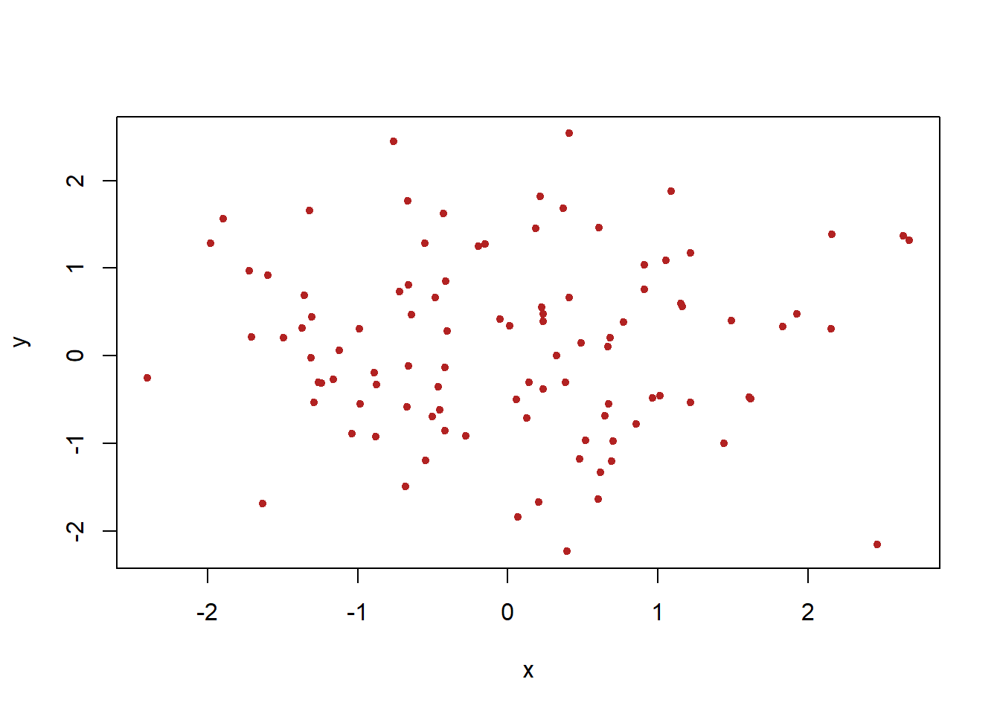
plot(x,y, pch=20, col = "steelblue",xlab="this is the x-axis",ylab="this is the y-axis",main="Plot of X vs Y") # Add labels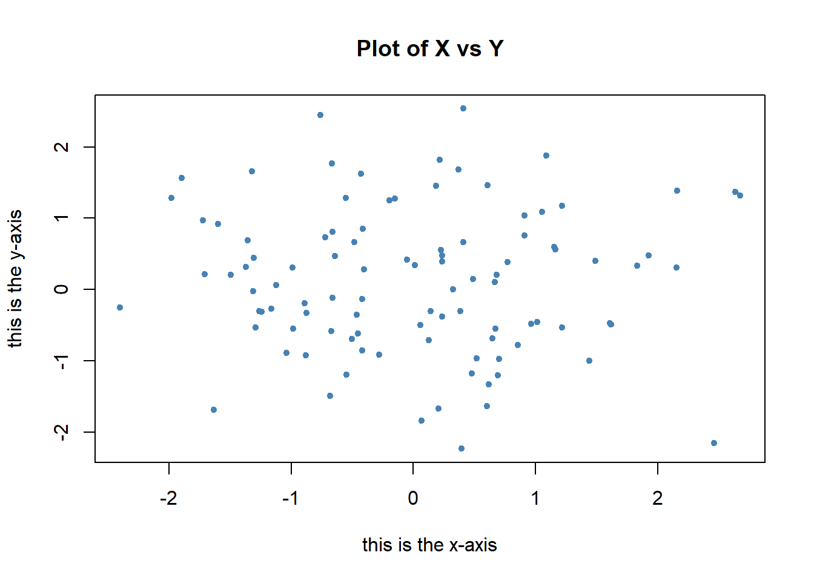
pdf("Figure01.pdf") # Save as pdf, add a path or it will be stored on the project directory
plot(x,y,pch=20, col="forestgreen") # Try different colors?
dev.off() # Close the file using the dev.off functionpng
2 x=seq(1,10) # Same as x=c(1:10)
x [1] 1 2 3 4 5 6 7 8 9 10x=1:10
x [1] 1 2 3 4 5 6 7 8 9 10x=seq(-pi,pi,length=50)
y=xA=matrix(1:16,4,4)
A [,1] [,2] [,3] [,4]
[1,] 1 5 9 13
[2,] 2 6 10 14
[3,] 3 7 11 15
[4,] 4 8 12 16A[2,3][1] 10A[c(1,3),c(2,4)] [,1] [,2]
[1,] 5 13
[2,] 7 15A[1:3,2:4] [,1] [,2] [,3]
[1,] 5 9 13
[2,] 6 10 14
[3,] 7 11 15A[1:2,] [,1] [,2] [,3] [,4]
[1,] 1 5 9 13
[2,] 2 6 10 14A[,1:2] [,1] [,2]
[1,] 1 5
[2,] 2 6
[3,] 3 7
[4,] 4 8A[1,][1] 1 5 9 13A[-c(1,3),] # What does -c() do? [,1] [,2] [,3] [,4]
[1,] 2 6 10 14
[2,] 4 8 12 16A[-c(1,3),-c(1,3,4)][1] 6 8dim(A) # Dimensions[1] 4 4Auto=read.table("https://raw.githubusercontent.com/datageneration/knowledgemining/master/data/Auto.data")
Auto=read.table("https://raw.githubusercontent.com/datageneration/knowledgemining/master/data/Auto.data",header=T,na.strings="?")
Auto=read.csv("https://raw.githubusercontent.com/datageneration/knowledgemining/master/data/Auto.csv") # read csv file
# Which function reads data faster?
# Try using this simple method
# time1 = proc.time()
# Auto=read.csv("https://raw.githubusercontent.com/datageneration/knowledgemining/master/data/Auto.csv",header=T,na.strings="?")
# proc.time()-time1
# Check on data
dim(Auto)[1] 397 9Auto[1:4,] # select rows mpg cylinders displacement horsepower weight acceleration year origin
1 18 8 307 130 3504 12.0 70 1
2 15 8 350 165 3693 11.5 70 1
3 18 8 318 150 3436 11.0 70 1
4 16 8 304 150 3433 12.0 70 1
name
1 chevrolet chevelle malibu
2 buick skylark 320
3 plymouth satellite
4 amc rebel sstAuto=na.omit(Auto)
dim(Auto) # Notice the difference?[1] 397 9names(Auto)[1] "mpg" "cylinders" "displacement" "horsepower" "weight"
[6] "acceleration" "year" "origin" "name" Auto=read.table("https://www.statlearning.com/s/Auto.data",header=T,na.strings="?")
dim(Auto)[1] 397 9# plot(cylinders, mpg)
plot(Auto$cylinders, Auto$mpg)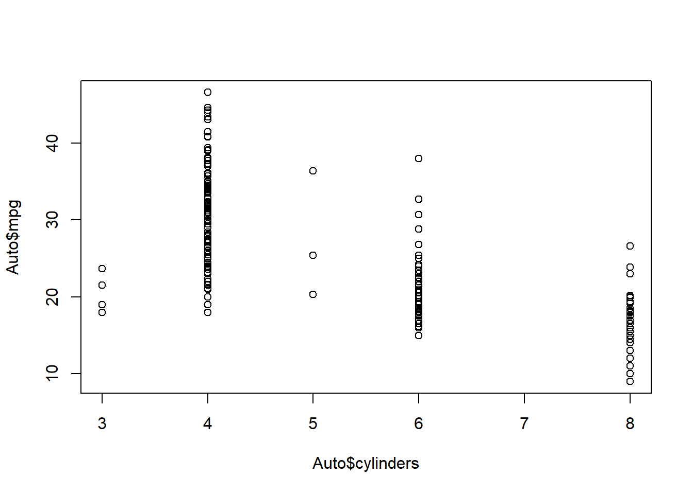
attach(Auto)
plot(cylinders, mpg)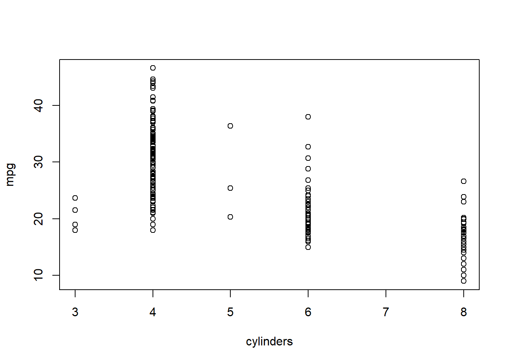
cylinders=as.factor(cylinders)
plot(cylinders, mpg)
plot(cylinders, mpg, col="red")
plot(cylinders, mpg, col="red", varwidth=T)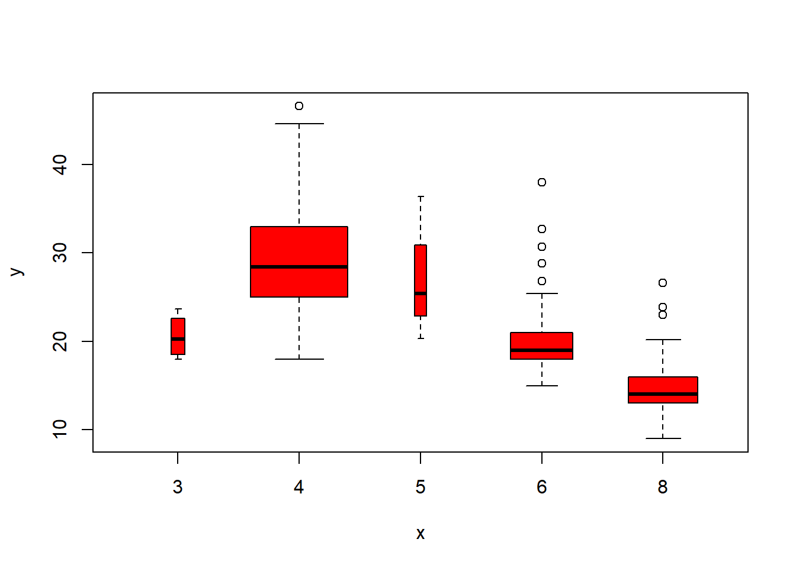
plot(cylinders, mpg, col="red", varwidth=T,horizontal=T)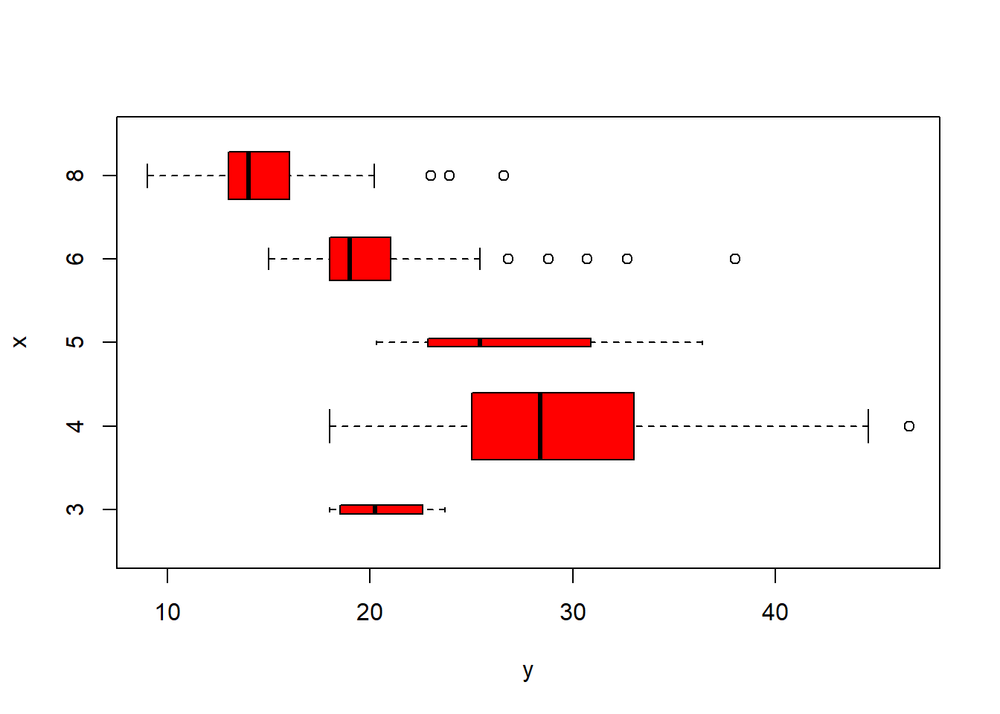
plot(cylinders, mpg, col="red", varwidth=T, xlab="cylinders", ylab="MPG")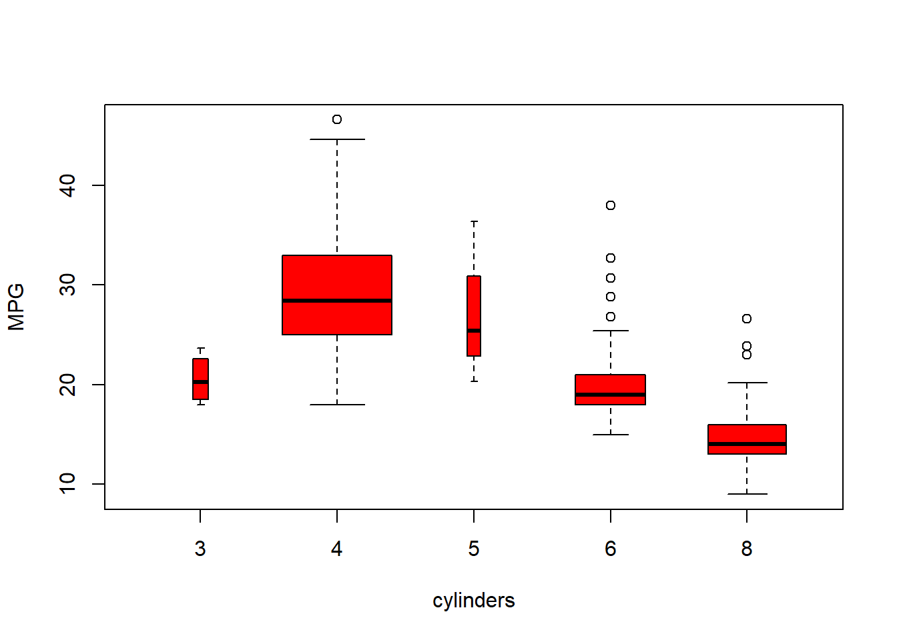
hist(mpg)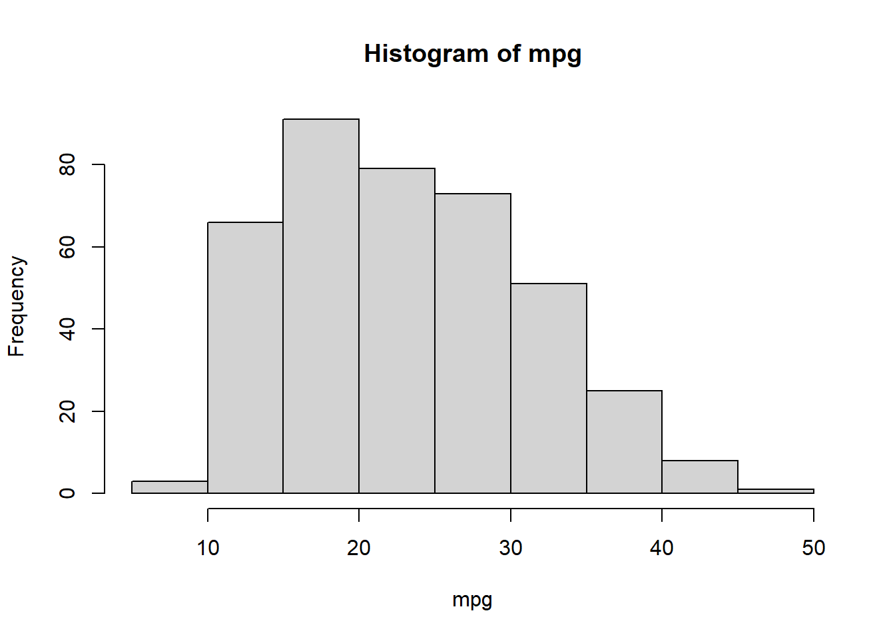
hist(mpg,col=2)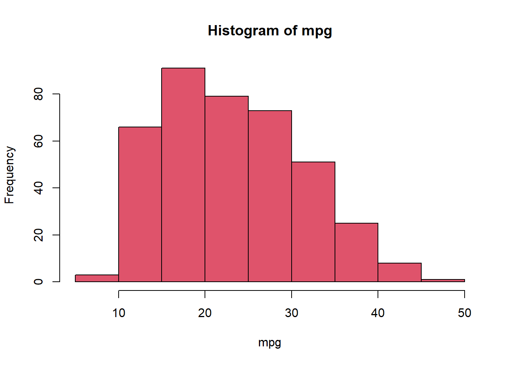
hist(mpg,col=2,breaks=15)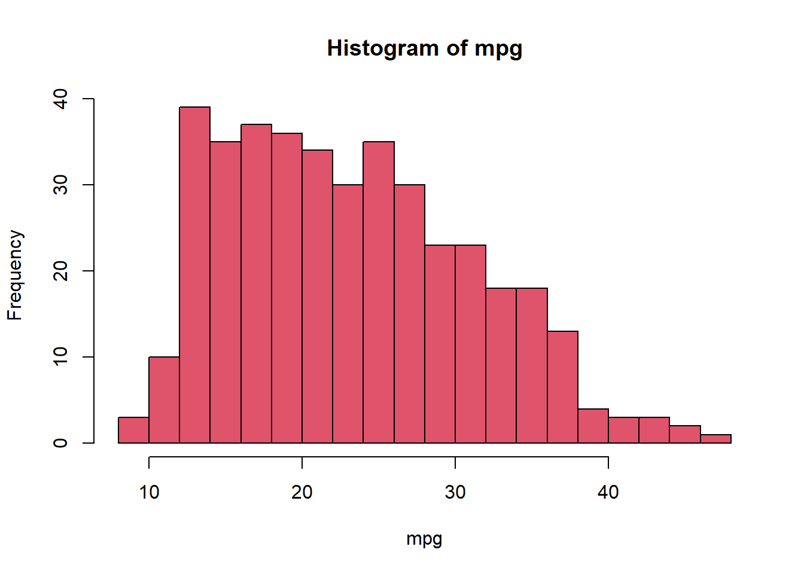
#pairs(Auto)
pairs(~ mpg + displacement + horsepower + weight + acceleration, Auto)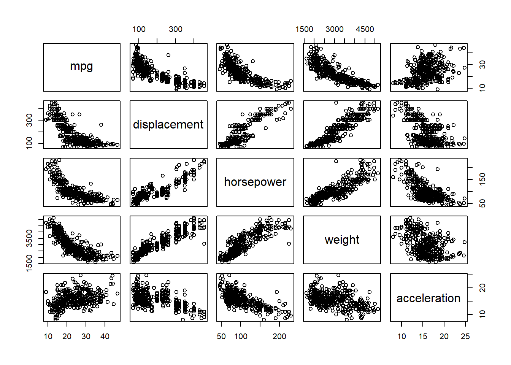
plot(horsepower,mpg)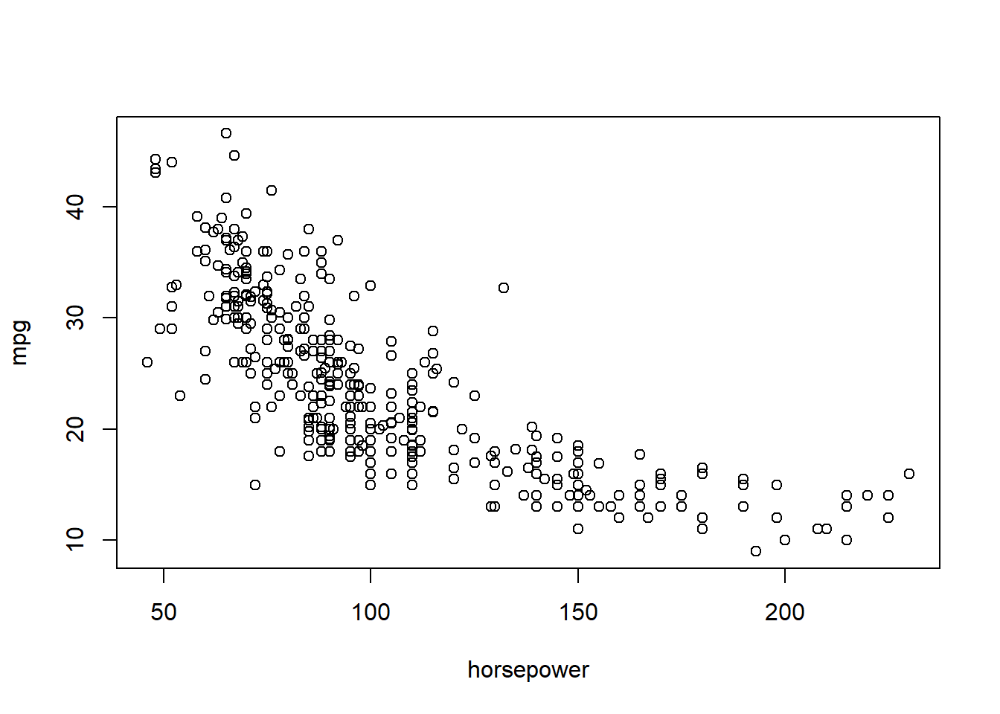
# identify(horsepower,mpg,name) # Interactive: point and click the dot to identify cases
summary(Auto) mpg cylinders displacement horsepower weight
Min. : 9.00 Min. :3.000 Min. : 68.0 Min. : 46.0 Min. :1613
1st Qu.:17.50 1st Qu.:4.000 1st Qu.:104.0 1st Qu.: 75.0 1st Qu.:2223
Median :23.00 Median :4.000 Median :146.0 Median : 93.5 Median :2800
Mean :23.52 Mean :5.458 Mean :193.5 Mean :104.5 Mean :2970
3rd Qu.:29.00 3rd Qu.:8.000 3rd Qu.:262.0 3rd Qu.:126.0 3rd Qu.:3609
Max. :46.60 Max. :8.000 Max. :455.0 Max. :230.0 Max. :5140
NA's :5
acceleration year origin name
Min. : 8.00 Min. :70.00 Min. :1.000 Length:397
1st Qu.:13.80 1st Qu.:73.00 1st Qu.:1.000 Class :character
Median :15.50 Median :76.00 Median :1.000 Mode :character
Mean :15.56 Mean :75.99 Mean :1.574
3rd Qu.:17.10 3rd Qu.:79.00 3rd Qu.:2.000
Max. :24.80 Max. :82.00 Max. :3.000
summary(mpg) Min. 1st Qu. Median Mean 3rd Qu. Max.
9.00 17.50 23.00 23.52 29.00 46.60 ptbu=c("MASS","ISLR")
lapply(ptbu, require, character.only = TRUE)Loading required package: MASSWarning: package 'MASS' was built under R version 4.5.2Loading required package: ISLRWarning: package 'ISLR' was built under R version 4.5.2
Attaching package: 'ISLR'The following object is masked _by_ '.GlobalEnv':
Auto[[1]]
[1] TRUE
[[2]]
[1] TRUElibrary(MASS)
library(ISLR)
# Simple Linear Regression
# fix(Boston)
names(Boston) [1] "crim" "zn" "indus" "chas" "nox" "rm" "age"
[8] "dis" "rad" "tax" "ptratio" "black" "lstat" "medv" # lm.fit=lm(medv~lstat)
attach(Boston)
lm.fit=lm(medv~lstat,data=Boston)
attach(Boston)The following objects are masked from Boston (pos = 3):
age, black, chas, crim, dis, indus, lstat, medv, nox, ptratio, rad,
rm, tax, znlm.fit=lm(medv~lstat)
lm.fit
Call:
lm(formula = medv ~ lstat)
Coefficients:
(Intercept) lstat
34.55 -0.95 summary(lm.fit)
Call:
lm(formula = medv ~ lstat)
Residuals:
Min 1Q Median 3Q Max
-15.168 -3.990 -1.318 2.034 24.500
Coefficients:
Estimate Std. Error t value Pr(>|t|)
(Intercept) 34.55384 0.56263 61.41 <2e-16 ***
lstat -0.95005 0.03873 -24.53 <2e-16 ***
---
Signif. codes: 0 '***' 0.001 '**' 0.01 '*' 0.05 '.' 0.1 ' ' 1
Residual standard error: 6.216 on 504 degrees of freedom
Multiple R-squared: 0.5441, Adjusted R-squared: 0.5432
F-statistic: 601.6 on 1 and 504 DF, p-value: < 2.2e-16names(lm.fit) [1] "coefficients" "residuals" "effects" "rank"
[5] "fitted.values" "assign" "qr" "df.residual"
[9] "xlevels" "call" "terms" "model" coef(lm.fit)(Intercept) lstat
34.5538409 -0.9500494 confint(lm.fit) 2.5 % 97.5 %
(Intercept) 33.448457 35.6592247
lstat -1.026148 -0.8739505predict(lm.fit,data.frame(lstat=(c(5,10,15))), interval="confidence") fit lwr upr
1 29.80359 29.00741 30.59978
2 25.05335 24.47413 25.63256
3 20.30310 19.73159 20.87461predict(lm.fit,data.frame(lstat=(c(5,10,15))), interval="prediction") fit lwr upr
1 29.80359 17.565675 42.04151
2 25.05335 12.827626 37.27907
3 20.30310 8.077742 32.52846# What is the differnce between "conference" and "prediction" difference?
plot(lstat,medv)
abline(lm.fit)
abline(lm.fit,lwd=3)
abline(lm.fit,lwd=3,col="red")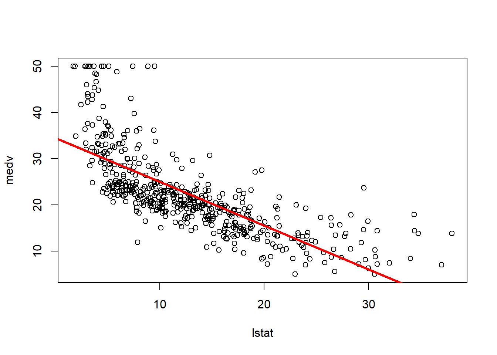
plot(lstat,medv,col="red")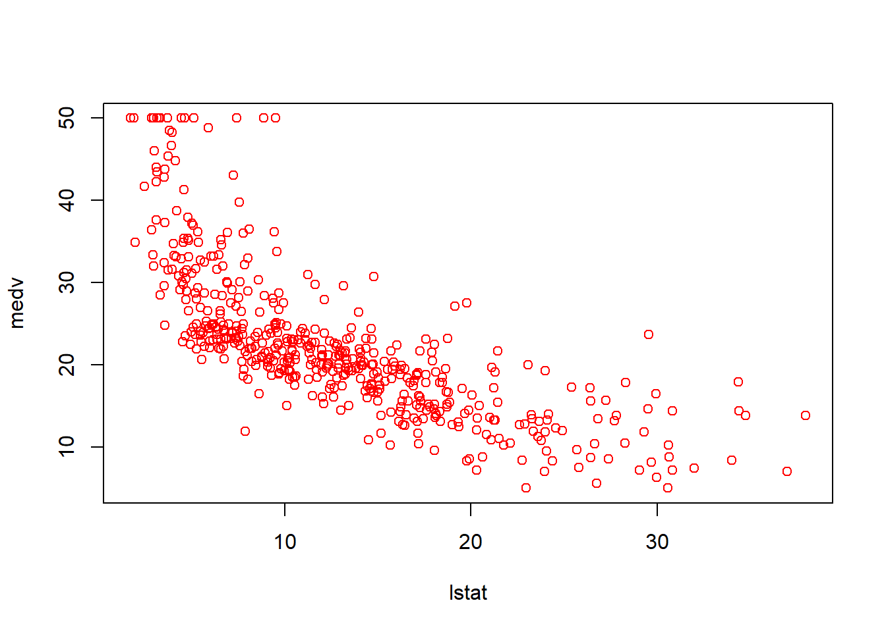
plot(lstat,medv,pch=16)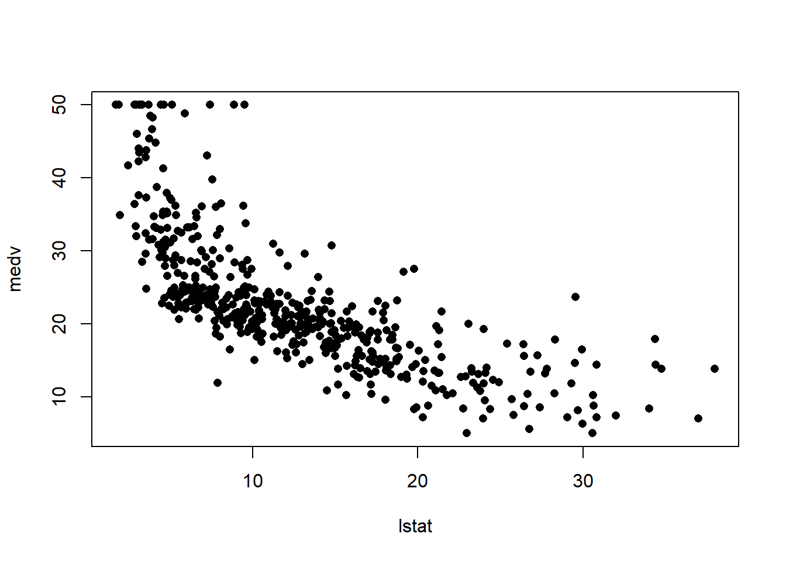
plot(lstat,medv,pch="+")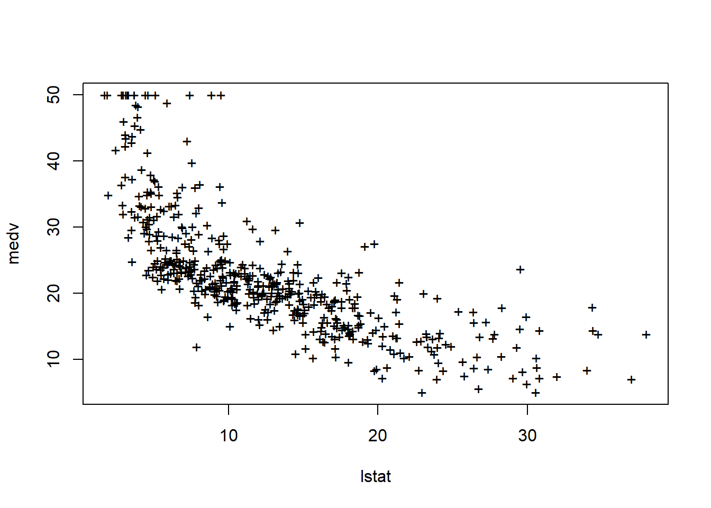
plot(1:20,1:20,pch=1:20)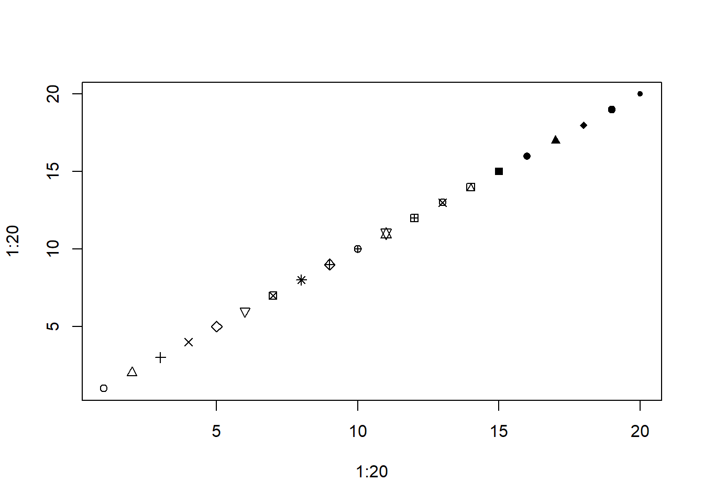
par(mfrow=c(2,2))
plot(lm.fit)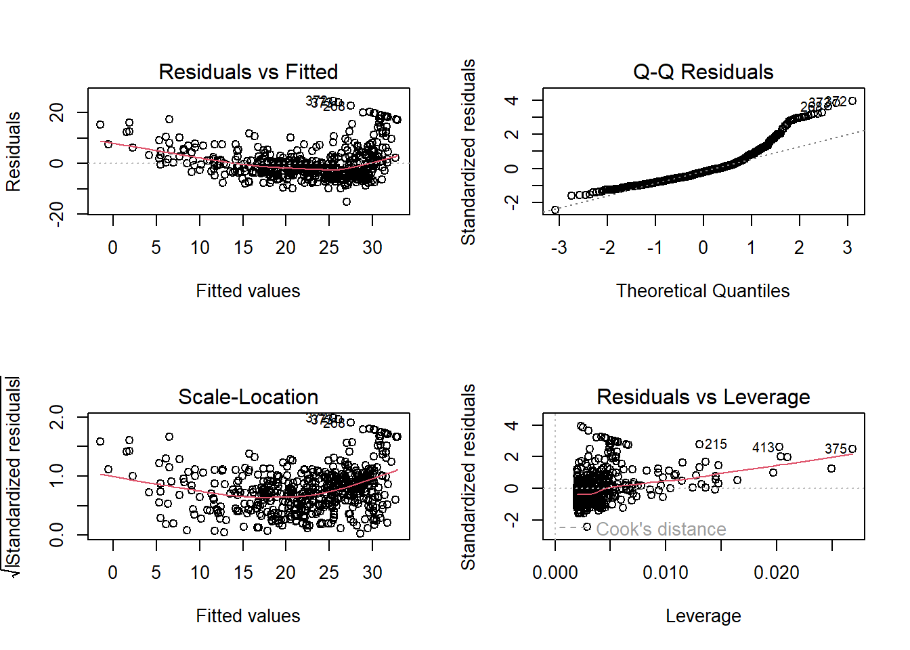
plot(predict(lm.fit), residuals(lm.fit))
plot(predict(lm.fit), rstudent(lm.fit))
plot(hatvalues(lm.fit))
which.max(hatvalues(lm.fit))375
375 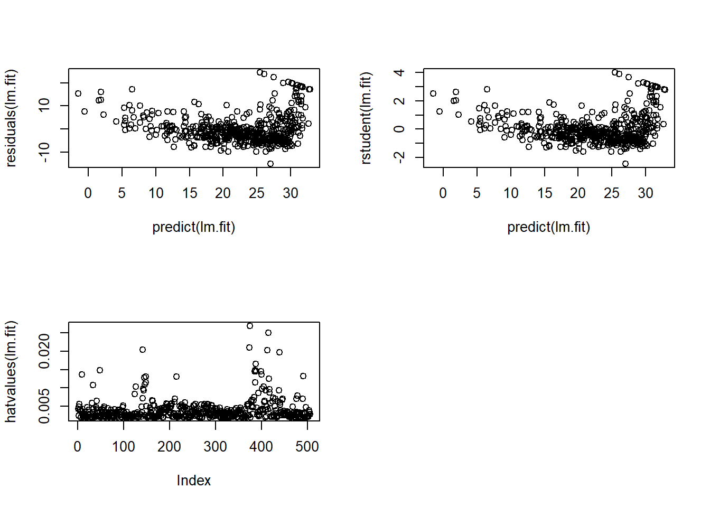
lm.fit=lm(medv~lstat+age,data=Boston)
summary(lm.fit)
Call:
lm(formula = medv ~ lstat + age, data = Boston)
Residuals:
Min 1Q Median 3Q Max
-15.981 -3.978 -1.283 1.968 23.158
Coefficients:
Estimate Std. Error t value Pr(>|t|)
(Intercept) 33.22276 0.73085 45.458 < 2e-16 ***
lstat -1.03207 0.04819 -21.416 < 2e-16 ***
age 0.03454 0.01223 2.826 0.00491 **
---
Signif. codes: 0 '***' 0.001 '**' 0.01 '*' 0.05 '.' 0.1 ' ' 1
Residual standard error: 6.173 on 503 degrees of freedom
Multiple R-squared: 0.5513, Adjusted R-squared: 0.5495
F-statistic: 309 on 2 and 503 DF, p-value: < 2.2e-16lm.fit=lm(medv~.,data=Boston)
summary(lm.fit)
Call:
lm(formula = medv ~ ., data = Boston)
Residuals:
Min 1Q Median 3Q Max
-15.595 -2.730 -0.518 1.777 26.199
Coefficients:
Estimate Std. Error t value Pr(>|t|)
(Intercept) 3.646e+01 5.103e+00 7.144 3.28e-12 ***
crim -1.080e-01 3.286e-02 -3.287 0.001087 **
zn 4.642e-02 1.373e-02 3.382 0.000778 ***
indus 2.056e-02 6.150e-02 0.334 0.738288
chas 2.687e+00 8.616e-01 3.118 0.001925 **
nox -1.777e+01 3.820e+00 -4.651 4.25e-06 ***
rm 3.810e+00 4.179e-01 9.116 < 2e-16 ***
age 6.922e-04 1.321e-02 0.052 0.958229
dis -1.476e+00 1.995e-01 -7.398 6.01e-13 ***
rad 3.060e-01 6.635e-02 4.613 5.07e-06 ***
tax -1.233e-02 3.760e-03 -3.280 0.001112 **
ptratio -9.527e-01 1.308e-01 -7.283 1.31e-12 ***
black 9.312e-03 2.686e-03 3.467 0.000573 ***
lstat -5.248e-01 5.072e-02 -10.347 < 2e-16 ***
---
Signif. codes: 0 '***' 0.001 '**' 0.01 '*' 0.05 '.' 0.1 ' ' 1
Residual standard error: 4.745 on 492 degrees of freedom
Multiple R-squared: 0.7406, Adjusted R-squared: 0.7338
F-statistic: 108.1 on 13 and 492 DF, p-value: < 2.2e-16library(car)Warning: package 'car' was built under R version 4.5.2Loading required package: carDataWarning: package 'carData' was built under R version 4.5.2vif(lm.fit) crim zn indus chas nox rm age dis
1.792192 2.298758 3.991596 1.073995 4.393720 1.933744 3.100826 3.955945
rad tax ptratio black lstat
7.484496 9.008554 1.799084 1.348521 2.941491 lm.fit1=lm(medv~.-age,data=Boston)
summary(lm.fit1)
Call:
lm(formula = medv ~ . - age, data = Boston)
Residuals:
Min 1Q Median 3Q Max
-15.6054 -2.7313 -0.5188 1.7601 26.2243
Coefficients:
Estimate Std. Error t value Pr(>|t|)
(Intercept) 36.436927 5.080119 7.172 2.72e-12 ***
crim -0.108006 0.032832 -3.290 0.001075 **
zn 0.046334 0.013613 3.404 0.000719 ***
indus 0.020562 0.061433 0.335 0.737989
chas 2.689026 0.859598 3.128 0.001863 **
nox -17.713540 3.679308 -4.814 1.97e-06 ***
rm 3.814394 0.408480 9.338 < 2e-16 ***
dis -1.478612 0.190611 -7.757 5.03e-14 ***
rad 0.305786 0.066089 4.627 4.75e-06 ***
tax -0.012329 0.003755 -3.283 0.001099 **
ptratio -0.952211 0.130294 -7.308 1.10e-12 ***
black 0.009321 0.002678 3.481 0.000544 ***
lstat -0.523852 0.047625 -10.999 < 2e-16 ***
---
Signif. codes: 0 '***' 0.001 '**' 0.01 '*' 0.05 '.' 0.1 ' ' 1
Residual standard error: 4.74 on 493 degrees of freedom
Multiple R-squared: 0.7406, Adjusted R-squared: 0.7343
F-statistic: 117.3 on 12 and 493 DF, p-value: < 2.2e-16lm.fit1=update(lm.fit, ~.-age)lm.fit2=lm(medv~lstat+I(lstat^2))
summary(lm.fit2)
Call:
lm(formula = medv ~ lstat + I(lstat^2))
Residuals:
Min 1Q Median 3Q Max
-15.2834 -3.8313 -0.5295 2.3095 25.4148
Coefficients:
Estimate Std. Error t value Pr(>|t|)
(Intercept) 42.862007 0.872084 49.15 <2e-16 ***
lstat -2.332821 0.123803 -18.84 <2e-16 ***
I(lstat^2) 0.043547 0.003745 11.63 <2e-16 ***
---
Signif. codes: 0 '***' 0.001 '**' 0.01 '*' 0.05 '.' 0.1 ' ' 1
Residual standard error: 5.524 on 503 degrees of freedom
Multiple R-squared: 0.6407, Adjusted R-squared: 0.6393
F-statistic: 448.5 on 2 and 503 DF, p-value: < 2.2e-16lm.fit=lm(medv~lstat)
anova(lm.fit,lm.fit2)Analysis of Variance Table
Model 1: medv ~ lstat
Model 2: medv ~ lstat + I(lstat^2)
Res.Df RSS Df Sum of Sq F Pr(>F)
1 504 19472
2 503 15347 1 4125.1 135.2 < 2.2e-16 ***
---
Signif. codes: 0 '***' 0.001 '**' 0.01 '*' 0.05 '.' 0.1 ' ' 1par(mfrow=c(2,2))
plot(lm.fit2)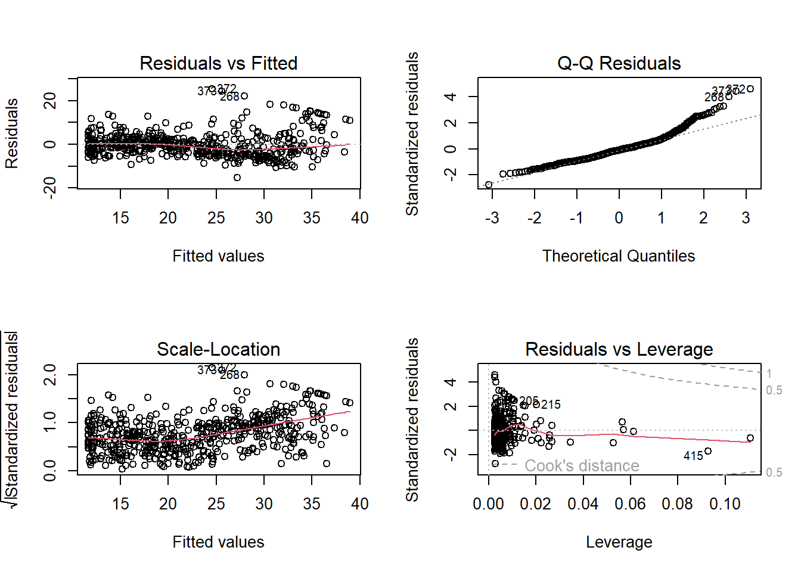
lm.fit5=lm(medv~poly(lstat,5))
summary(lm.fit5)
Call:
lm(formula = medv ~ poly(lstat, 5))
Residuals:
Min 1Q Median 3Q Max
-13.5433 -3.1039 -0.7052 2.0844 27.1153
Coefficients:
Estimate Std. Error t value Pr(>|t|)
(Intercept) 22.5328 0.2318 97.197 < 2e-16 ***
poly(lstat, 5)1 -152.4595 5.2148 -29.236 < 2e-16 ***
poly(lstat, 5)2 64.2272 5.2148 12.316 < 2e-16 ***
poly(lstat, 5)3 -27.0511 5.2148 -5.187 3.10e-07 ***
poly(lstat, 5)4 25.4517 5.2148 4.881 1.42e-06 ***
poly(lstat, 5)5 -19.2524 5.2148 -3.692 0.000247 ***
---
Signif. codes: 0 '***' 0.001 '**' 0.01 '*' 0.05 '.' 0.1 ' ' 1
Residual standard error: 5.215 on 500 degrees of freedom
Multiple R-squared: 0.6817, Adjusted R-squared: 0.6785
F-statistic: 214.2 on 5 and 500 DF, p-value: < 2.2e-16summary(lm(medv~log(rm),data=Boston))
Call:
lm(formula = medv ~ log(rm), data = Boston)
Residuals:
Min 1Q Median 3Q Max
-19.487 -2.875 -0.104 2.837 39.816
Coefficients:
Estimate Std. Error t value Pr(>|t|)
(Intercept) -76.488 5.028 -15.21 <2e-16 ***
log(rm) 54.055 2.739 19.73 <2e-16 ***
---
Signif. codes: 0 '***' 0.001 '**' 0.01 '*' 0.05 '.' 0.1 ' ' 1
Residual standard error: 6.915 on 504 degrees of freedom
Multiple R-squared: 0.4358, Adjusted R-squared: 0.4347
F-statistic: 389.3 on 1 and 504 DF, p-value: < 2.2e-16# fix(Carseats)
names(Carseats) [1] "Sales" "CompPrice" "Income" "Advertising" "Population"
[6] "Price" "ShelveLoc" "Age" "Education" "Urban"
[11] "US" lm.fit=lm(Sales~.+Income:Advertising+Price:Age,data=Carseats)
summary(lm.fit)
Call:
lm(formula = Sales ~ . + Income:Advertising + Price:Age, data = Carseats)
Residuals:
Min 1Q Median 3Q Max
-2.9208 -0.7503 0.0177 0.6754 3.3413
Coefficients:
Estimate Std. Error t value Pr(>|t|)
(Intercept) 6.5755654 1.0087470 6.519 2.22e-10 ***
CompPrice 0.0929371 0.0041183 22.567 < 2e-16 ***
Income 0.0108940 0.0026044 4.183 3.57e-05 ***
Advertising 0.0702462 0.0226091 3.107 0.002030 **
Population 0.0001592 0.0003679 0.433 0.665330
Price -0.1008064 0.0074399 -13.549 < 2e-16 ***
ShelveLocGood 4.8486762 0.1528378 31.724 < 2e-16 ***
ShelveLocMedium 1.9532620 0.1257682 15.531 < 2e-16 ***
Age -0.0579466 0.0159506 -3.633 0.000318 ***
Education -0.0208525 0.0196131 -1.063 0.288361
UrbanYes 0.1401597 0.1124019 1.247 0.213171
USYes -0.1575571 0.1489234 -1.058 0.290729
Income:Advertising 0.0007510 0.0002784 2.698 0.007290 **
Price:Age 0.0001068 0.0001333 0.801 0.423812
---
Signif. codes: 0 '***' 0.001 '**' 0.01 '*' 0.05 '.' 0.1 ' ' 1
Residual standard error: 1.011 on 386 degrees of freedom
Multiple R-squared: 0.8761, Adjusted R-squared: 0.8719
F-statistic: 210 on 13 and 386 DF, p-value: < 2.2e-16attach(Carseats)
contrasts(ShelveLoc) Good Medium
Bad 0 0
Good 1 0
Medium 0 1summary(lm(medv~lstat*age,data=Boston))
Call:
lm(formula = medv ~ lstat * age, data = Boston)
Residuals:
Min 1Q Median 3Q Max
-15.806 -4.045 -1.333 2.085 27.552
Coefficients:
Estimate Std. Error t value Pr(>|t|)
(Intercept) 36.0885359 1.4698355 24.553 < 2e-16 ***
lstat -1.3921168 0.1674555 -8.313 8.78e-16 ***
age -0.0007209 0.0198792 -0.036 0.9711
lstat:age 0.0041560 0.0018518 2.244 0.0252 *
---
Signif. codes: 0 '***' 0.001 '**' 0.01 '*' 0.05 '.' 0.1 ' ' 1
Residual standard error: 6.149 on 502 degrees of freedom
Multiple R-squared: 0.5557, Adjusted R-squared: 0.5531
F-statistic: 209.3 on 3 and 502 DF, p-value: < 2.2e-16library(haven)Warning: package 'haven' was built under R version 4.5.2TEDS_2016 <- haven::read_dta(
"https://github.com/datageneration/home/blob/master/DataProgramming/data/TEDS_2016.dta?raw=true"
)
names(TEDS_2016) [1] "District" "Sex" "Age" "Edu"
[5] "Arear" "Career" "Career8" "Ethnic"
[9] "Party" "PartyID" "Tondu" "Tondu3"
[13] "nI2" "votetsai" "green" "votetsai_nm"
[17] "votetsai_all" "Independence" "Unification" "sq"
[21] "Taiwanese" "edu" "female" "whitecollar"
[25] "lowincome" "income" "income_nm" "age"
[29] "KMT" "DPP" "npp" "noparty"
[33] "pfp" "South" "north" "Minnan_father"
[37] "Mainland_father" "Econ_worse" "Inequality" "inequality5"
[41] "econworse5" "Govt_for_public" "pubwelf5" "Govt_dont_care"
[45] "highincome" "votekmt" "votekmt_nm" "Blue"
[49] "Green" "No_Party" "voteblue" "voteblue_nm"
[53] "votedpp_1" "votekmt_1" str(TEDS_2016)tibble [1,690 × 54] (S3: tbl_df/tbl/data.frame)
$ District : dbl+lbl [1:1690] 201, 201, 201, 201, 201, 201, 201, 201, 201, 201, 201...
..@ label : chr "District"
..@ format.stata: chr "%10.0g"
..@ labels : Named num [1:73] 201 401 501 502 701 702 703 704 801 802 ...
.. ..- attr(*, "names")= chr [1:73] "Yi Lan County Single District" "Hsinchu County Single District" "Miaoli County 1st District" "Miaoli County 2nd District" ...
$ Sex : dbl+lbl [1:1690] 2, 2, 1, 1, 2, 2, 1, 2, 2, 1, 1, 2, 2, 2, 2, 2, 2, 1,...
..@ label : chr "Sex"
..@ format.stata: chr "%10.0g"
..@ labels : Named num [1:2] 1 2
.. ..- attr(*, "names")= chr [1:2] "Male" "Female"
$ Age : dbl+lbl [1:1690] 4, 2, 5, 4, 5, 5, 5, 4, 5, 4, 5, 1, 5, 3, 4, 5, 4, 5,...
..@ label : chr "Age"
..@ format.stata: chr "%10.0g"
..@ labels : Named num [1:5] 1 2 3 4 5
.. ..- attr(*, "names")= chr [1:5] "20-29" "30-39" "40-49" "50-59" ...
$ Edu : dbl+lbl [1:1690] 4, 5, 5, 2, 1, 2, 1, 5, 1, 1, 1, 2, 1, 5, 5, 1, 3, 4,...
..@ label : chr "Education"
..@ format.stata: chr "%10.0g"
..@ labels : Named num [1:6] 1 2 3 4 5 9
.. ..- attr(*, "names")= chr [1:6] "Below elementary school" "Junior high school" "Senior high school" "College" ...
$ Arear : dbl+lbl [1:1690] 1, 1, 1, 1, 1, 1, 1, 1, 1, 1, 1, 1, 1, 1, 1, 1, 1, 1,...
..@ label : chr "Area"
..@ format.stata: chr "%10.0g"
..@ labels : Named num [1:6] 1 2 3 4 5 6
.. ..- attr(*, "names")= chr [1:6] "Taipei, New Taipei, Keelung and Yi Lan" "Taoyuan, Hsinchu and Miaoli" "Taichung, Changhua and Nantou" "Yunlin, Chiayi and Tainan" ...
$ Career : dbl+lbl [1:1690] 1, 2, 1, 4, 3, 2, 4, 1, 4, 3, 3, 5, 5, 4, 1, 5, 2, 2,...
..@ label : chr "Occupations5"
..@ format.stata: chr "%10.0g"
..@ labels : Named num [1:5] 1 2 3 4 5
.. ..- attr(*, "names")= chr [1:5] "Hight-class WHITE COLLAR" "Low-class WHITE COLLAR" "FARMER" "WORKER" ...
$ Career8 : dbl+lbl [1:1690] 1, 3, 1, 4, 5, 7, 4, 2, 4, 5, 5, 7, 7, 7, 2, 7, 3, 1,...
..@ label : chr "Occupation8"
..@ format.stata: chr "%10.0g"
..@ labels : Named num [1:8] 1 2 3 4 5 6 7 8
.. ..- attr(*, "names")= chr [1:8] "Civil servants" "Managers and Professionals (priv.)" "CLERKS (priv.)" "Labor (priv.)" ...
$ Ethnic : dbl+lbl [1:1690] 1, 2, 2, 1, 9, 1, 2, 1, 1, 2, 1, 1, 2, 1, 2, 9, 2, 2,...
..@ label : chr "Ethnic"
..@ format.stata: chr "%10.0g"
..@ labels : Named num [1:4] 1 2 3 9
.. ..- attr(*, "names")= chr [1:4] "Taiwanese" "Both" "Chinese" "Noresponse"
$ Party : dbl+lbl [1:1690] 25, 25, 3, 25, 25, 6, 25, 24, 25, 25, 6, 5, 25, ...
..@ label : chr "Party Preference"
..@ format.stata: chr "%10.0g"
..@ labels : Named num [1:26] 1 2 3 4 5 6 7 8 9 10 ...
.. ..- attr(*, "names")= chr [1:26] "Strongly support KMT" "Somewhat support KMT" "Lean to KMT" "Somewhat lean to KMT" ...
$ PartyID : dbl+lbl [1:1690] 9, 9, 1, 9, 9, 2, 9, 6, 9, 9, 2, 2, 9, 1, 1, 9, 9, 9,...
..@ label : chr "Party Identification"
..@ format.stata: chr "%10.0g"
..@ labels : Named num [1:7] 1 2 3 4 5 6 9
.. ..- attr(*, "names")= chr [1:7] "KMT" "DPP" "NP" "PFP" ...
$ Tondu : dbl+lbl [1:1690] 3, 5, 3, 5, 9, 4, 9, 6, 9, 9, 5, 5, 9, 5, 4, 9, 9, 4,...
..@ label : chr "Position on unification and independence"
..@ format.stata: chr "%10.0g"
..@ labels : Named num [1:7] 1 2 3 4 5 6 9
.. ..- attr(*, "names")= chr [1:7] "Immediate unification" "Maintain the status quo,move toward unification" "Maintain the status quo, decide either unification or independence" "Maintain the status quo forever" ...
$ Tondu3 : dbl+lbl [1:1690] 2, 3, 2, 3, 9, 2, 9, 3, 9, 9, 3, 3, 9, 3, 2, 9, 9, 2,...
..@ label : chr "3 categories of TONDU"
..@ format.stata: chr "%10.0g"
..@ labels : Named num [1:4] 1 2 3 9
.. ..- attr(*, "names")= chr [1:4] "Unification" "Maintain the status quo" "Independence" "Nonresponse"
$ nI2 : dbl+lbl [1:1690] 3, 98, 98, 3, 98, 98, 98, 3, 98, 1, 2, 98, 98, ...
..@ label : chr "Who is the current the premier of our country?"
..@ format.stata: chr "%10.0g"
..@ labels : Named num [1:5] 1 2 3 95 98
.. ..- attr(*, "names")= chr [1:5] "Correct" "Incorrect" "I know but can't remember the name" "Refuse to answer" ...
$ votetsai : num [1:1690] NA 1 0 NA NA 1 1 1 1 NA ...
..- attr(*, "format.stata")= chr "%9.0g"
$ green : num [1:1690] 0 0 0 0 0 1 0 1 0 0 ...
..- attr(*, "format.stata")= chr "%9.0g"
$ votetsai_nm : num [1:1690] NA 1 0 NA NA 1 1 1 1 NA ...
..- attr(*, "format.stata")= chr "%9.0g"
$ votetsai_all : num [1:1690] 0 1 0 0 0 1 1 1 1 NA ...
..- attr(*, "format.stata")= chr "%9.0g"
$ Independence : num [1:1690] 0 1 0 1 0 0 0 1 0 0 ...
..- attr(*, "format.stata")= chr "%9.0g"
$ Unification : num [1:1690] 0 0 0 0 0 0 0 0 0 0 ...
..- attr(*, "format.stata")= chr "%9.0g"
$ sq : num [1:1690] 1 0 1 0 0 1 0 0 0 0 ...
..- attr(*, "format.stata")= chr "%9.0g"
$ Taiwanese : num [1:1690] 1 0 0 1 0 1 0 1 1 0 ...
..- attr(*, "format.stata")= chr "%9.0g"
$ edu : num [1:1690] 4 5 5 2 1 2 1 5 1 1 ...
..- attr(*, "format.stata")= chr "%9.0g"
$ female : num [1:1690] 1 1 0 0 1 1 0 1 1 0 ...
..- attr(*, "format.stata")= chr "%9.0g"
$ whitecollar : num [1:1690] 1 1 1 0 0 1 0 1 0 0 ...
..- attr(*, "format.stata")= chr "%9.0g"
$ lowincome : num [1:1690] 4 4 5 4 3 5 2 5 5 5 ...
..- attr(*, "label")= chr "How serious do you think low income of salaryman?"
..- attr(*, "format.stata")= chr "%9.0g"
$ income : num [1:1690] 8 7 8 5 5.5 9 1 10 2 5.5 ...
..- attr(*, "format.stata")= chr "%9.0g"
$ income_nm : num [1:1690] 8 7 8 5 NA 9 1 10 2 NA ...
..- attr(*, "format.stata")= chr "%9.0g"
$ age : num [1:1690] 59 39 63 55 76 64 75 54 64 59 ...
..- attr(*, "format.stata")= chr "%9.0g"
$ KMT : num [1:1690] 0 0 1 0 0 0 0 0 0 0 ...
..- attr(*, "format.stata")= chr "%9.0g"
$ DPP : num [1:1690] 0 0 0 0 0 1 0 0 0 0 ...
..- attr(*, "format.stata")= chr "%9.0g"
$ npp : num [1:1690] 0 0 0 0 0 0 0 1 0 0 ...
..- attr(*, "format.stata")= chr "%9.0g"
$ noparty : num [1:1690] 1 1 0 1 1 0 1 0 1 1 ...
..- attr(*, "format.stata")= chr "%9.0g"
$ pfp : num [1:1690] 0 0 0 0 0 0 0 0 0 0 ...
..- attr(*, "format.stata")= chr "%9.0g"
$ South : num [1:1690] 0 0 0 0 0 0 0 0 0 0 ...
..- attr(*, "format.stata")= chr "%9.0g"
$ north : num [1:1690] 1 1 1 1 1 1 1 1 1 1 ...
..- attr(*, "format.stata")= chr "%9.0g"
$ Minnan_father : num [1:1690] 1 1 1 1 1 1 1 1 1 1 ...
..- attr(*, "format.stata")= chr "%9.0g"
$ Mainland_father: num [1:1690] 0 0 0 0 0 0 0 0 0 0 ...
..- attr(*, "format.stata")= chr "%9.0g"
$ Econ_worse : num [1:1690] 0 0 1 1 0 1 1 1 1 1 ...
..- attr(*, "format.stata")= chr "%9.0g"
$ Inequality : num [1:1690] 1 1 1 1 0 1 0 1 1 1 ...
..- attr(*, "format.stata")= chr "%9.0g"
$ inequality5 : num [1:1690] 4 5 5 5 3 5 3 5 5 5 ...
..- attr(*, "format.stata")= chr "%9.0g"
$ econworse5 : num [1:1690] 3 3 4 5 3 4 4 5 5 5 ...
..- attr(*, "format.stata")= chr "%9.0g"
$ Govt_for_public: num [1:1690] 1 1 1 0 0 0 0 0 0 0 ...
..- attr(*, "format.stata")= chr "%9.0g"
$ pubwelf5 : num [1:1690] 5 5 4 1 3 2 2 1 3 2 ...
..- attr(*, "format.stata")= chr "%9.0g"
$ Govt_dont_care : num [1:1690] 0 0 1 1 0 1 1 1 0 1 ...
..- attr(*, "format.stata")= chr "%9.0g"
$ highincome : num [1:1690] 1 1 1 1 NA 1 0 1 0 NA ...
..- attr(*, "format.stata")= chr "%9.0g"
$ votekmt : num [1:1690] 0 0 1 0 0 0 0 0 0 0 ...
..- attr(*, "format.stata")= chr "%9.0g"
$ votekmt_nm : num [1:1690] NA 0 1 NA NA 0 0 0 0 NA ...
..- attr(*, "format.stata")= chr "%9.0g"
$ Blue : num [1:1690] 0 0 0 0 0 0 0 0 0 0 ...
..- attr(*, "format.stata")= chr "%9.0g"
$ Green : num [1:1690] 0 0 0 0 0 0 0 0 0 0 ...
..- attr(*, "format.stata")= chr "%9.0g"
$ No_Party : num [1:1690] 0 0 0 0 0 0 0 0 0 0 ...
..- attr(*, "format.stata")= chr "%9.0g"
$ voteblue : num [1:1690] 0 0 1 0 0 0 0 0 0 0 ...
..- attr(*, "format.stata")= chr "%9.0g"
$ voteblue_nm : num [1:1690] NA 0 1 NA NA 0 0 0 0 NA ...
..- attr(*, "format.stata")= chr "%9.0g"
$ votedpp_1 : num [1:1690] NA 1 0 NA NA 1 1 1 1 0 ...
..- attr(*, "format.stata")= chr "%9.0g"
$ votekmt_1 : num [1:1690] NA 0 1 NA NA 0 0 0 0 0 ...
..- attr(*, "format.stata")= chr "%9.0g"summary(TEDS_2016) District Sex Age Edu Arear
Min. : 201 Min. :1.000 Min. :1.0 Min. :1.000 Min. :1.000
1st Qu.:1401 1st Qu.:1.000 1st Qu.:2.0 1st Qu.:2.000 1st Qu.:1.000
Median :6406 Median :1.000 Median :3.0 Median :3.000 Median :3.000
Mean :4661 Mean :1.486 Mean :3.3 Mean :3.334 Mean :2.744
3rd Qu.:6604 3rd Qu.:2.000 3rd Qu.:5.0 3rd Qu.:5.000 3rd Qu.:4.000
Max. :6806 Max. :2.000 Max. :5.0 Max. :9.000 Max. :6.000
Career Career8 Ethnic Party
Min. :1.000 Min. :1.000 Min. :1.000 Min. : 1.00
1st Qu.:1.000 1st Qu.:2.000 1st Qu.:1.000 1st Qu.: 5.00
Median :2.000 Median :4.000 Median :1.000 Median : 7.00
Mean :2.683 Mean :3.811 Mean :1.658 Mean :13.02
3rd Qu.:4.000 3rd Qu.:5.000 3rd Qu.:2.000 3rd Qu.:25.00
Max. :5.000 Max. :8.000 Max. :9.000 Max. :26.00
PartyID Tondu Tondu3 nI2
Min. :1.000 Min. :1.000 Min. :1.000 Min. : 1.00
1st Qu.:2.000 1st Qu.:3.000 1st Qu.:2.000 1st Qu.: 1.00
Median :2.000 Median :4.000 Median :2.000 Median : 3.00
Mean :4.522 Mean :4.127 Mean :2.667 Mean :35.13
3rd Qu.:9.000 3rd Qu.:5.000 3rd Qu.:3.000 3rd Qu.:98.00
Max. :9.000 Max. :9.000 Max. :9.000 Max. :98.00
votetsai green votetsai_nm votetsai_all
Min. :0.0000 Min. :0.0000 Min. :0.0000 Min. :0.0000
1st Qu.:0.0000 1st Qu.:0.0000 1st Qu.:0.0000 1st Qu.:0.0000
Median :1.0000 Median :0.0000 Median :1.0000 Median :1.0000
Mean :0.6265 Mean :0.3781 Mean :0.6265 Mean :0.5478
3rd Qu.:1.0000 3rd Qu.:1.0000 3rd Qu.:1.0000 3rd Qu.:1.0000
Max. :1.0000 Max. :1.0000 Max. :1.0000 Max. :1.0000
NA's :429 NA's :429 NA's :248
Independence Unification sq Taiwanese
Min. :0.0000 Min. :0.0000 Min. :0.0000 Min. :0.0000
1st Qu.:0.0000 1st Qu.:0.0000 1st Qu.:0.0000 1st Qu.:0.0000
Median :0.0000 Median :0.0000 Median :1.0000 Median :1.0000
Mean :0.2888 Mean :0.1225 Mean :0.5172 Mean :0.6272
3rd Qu.:1.0000 3rd Qu.:0.0000 3rd Qu.:1.0000 3rd Qu.:1.0000
Max. :1.0000 Max. :1.0000 Max. :1.0000 Max. :1.0000
edu female whitecollar lowincome
Min. :1.000 Min. :0.0000 Min. :0.0000 Min. :1.000
1st Qu.:2.000 1st Qu.:0.0000 1st Qu.:0.0000 1st Qu.:4.000
Median :3.000 Median :0.0000 Median :1.0000 Median :5.000
Mean :3.301 Mean :0.4864 Mean :0.5373 Mean :4.343
3rd Qu.:5.000 3rd Qu.:1.0000 3rd Qu.:1.0000 3rd Qu.:5.000
Max. :5.000 Max. :1.0000 Max. :1.0000 Max. :5.000
NA's :10
income income_nm age KMT
Min. : 1.000 Min. : 1.000 Min. : 20.00 Min. :0.0000
1st Qu.: 3.000 1st Qu.: 2.000 1st Qu.: 35.00 1st Qu.:0.0000
Median : 5.500 Median : 5.000 Median : 49.00 Median :0.0000
Mean : 5.324 Mean : 5.281 Mean : 49.11 Mean :0.2296
3rd Qu.: 7.000 3rd Qu.: 8.000 3rd Qu.: 61.00 3rd Qu.:0.0000
Max. :10.000 Max. :10.000 Max. :100.00 Max. :1.0000
NA's :330
DPP npp noparty pfp
Min. :0.0000 Min. :0.00000 Min. :0.0000 Min. :0.00000
1st Qu.:0.0000 1st Qu.:0.00000 1st Qu.:0.0000 1st Qu.:0.00000
Median :0.0000 Median :0.00000 Median :0.0000 Median :0.00000
Mean :0.3497 Mean :0.02544 Mean :0.3716 Mean :0.01893
3rd Qu.:1.0000 3rd Qu.:0.00000 3rd Qu.:1.0000 3rd Qu.:0.00000
Max. :1.0000 Max. :1.00000 Max. :1.0000 Max. :1.00000
South north Minnan_father Mainland_father
Min. :0.0000 Min. :0.0000 Min. :0.0000 Min. :0.0000
1st Qu.:0.0000 1st Qu.:0.0000 1st Qu.:0.0000 1st Qu.:0.0000
Median :0.0000 Median :0.0000 Median :1.0000 Median :0.0000
Mean :0.4947 Mean :0.4799 Mean :0.7225 Mean :0.1024
3rd Qu.:1.0000 3rd Qu.:1.0000 3rd Qu.:1.0000 3rd Qu.:0.0000
Max. :1.0000 Max. :1.0000 Max. :1.0000 Max. :1.0000
Econ_worse Inequality inequality5 econworse5
Min. :0.0000 Min. :0.0000 Min. :1.000 Min. :1.000
1st Qu.:0.0000 1st Qu.:1.0000 1st Qu.:4.000 1st Qu.:3.000
Median :1.0000 Median :1.0000 Median :5.000 Median :4.000
Mean :0.5544 Mean :0.9355 Mean :4.495 Mean :3.644
3rd Qu.:1.0000 3rd Qu.:1.0000 3rd Qu.:5.000 3rd Qu.:4.000
Max. :1.0000 Max. :1.0000 Max. :5.000 Max. :5.000
Govt_for_public pubwelf5 Govt_dont_care highincome
Min. :0.0000 Min. :1.000 Min. :0.0000 Min. :0.0000
1st Qu.:0.0000 1st Qu.:2.000 1st Qu.:0.0000 1st Qu.:0.0000
Median :0.0000 Median :3.000 Median :0.0000 Median :1.0000
Mean :0.4249 Mean :2.877 Mean :0.4988 Mean :0.5765
3rd Qu.:1.0000 3rd Qu.:4.000 3rd Qu.:1.0000 3rd Qu.:1.0000
Max. :1.0000 Max. :5.000 Max. :1.0000 Max. :1.0000
NA's :330
votekmt votekmt_nm Blue Green No_Party
Min. :0.0000 Min. :0.0000 Min. :0 Min. :0 Min. :0
1st Qu.:0.0000 1st Qu.:0.0000 1st Qu.:0 1st Qu.:0 1st Qu.:0
Median :0.0000 Median :0.0000 Median :0 Median :0 Median :0
Mean :0.2053 Mean :0.2752 Mean :0 Mean :0 Mean :0
3rd Qu.:0.0000 3rd Qu.:1.0000 3rd Qu.:0 3rd Qu.:0 3rd Qu.:0
Max. :1.0000 Max. :1.0000 Max. :0 Max. :0 Max. :0
NA's :429
voteblue voteblue_nm votedpp_1 votekmt_1
Min. :0.0000 Min. :0.0000 Min. :0.0000 Min. :0.0000
1st Qu.:0.0000 1st Qu.:0.0000 1st Qu.:0.0000 1st Qu.:0.0000
Median :0.0000 Median :0.0000 Median :1.0000 Median :0.0000
Mean :0.2787 Mean :0.3735 Mean :0.5256 Mean :0.2309
3rd Qu.:1.0000 3rd Qu.:1.0000 3rd Qu.:1.0000 3rd Qu.:0.0000
Max. :1.0000 Max. :1.0000 Max. :1.0000 Max. :1.0000
NA's :429 NA's :187 NA's :187 # 1) Scatter-style plot (only meaningful if x is numeric-ish)
plot(TEDS_2016$Age, TEDS_2016$income)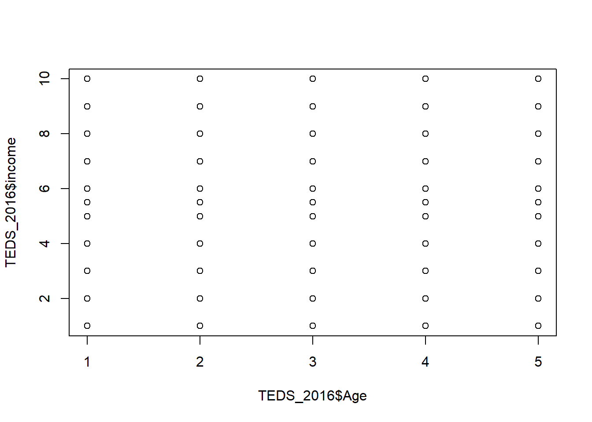
# 2) Treat Age as categorical (like cylinders)
TEDS_2016$Age_f <- as.factor(TEDS_2016$Age)
plot(TEDS_2016$Age_f, TEDS_2016$income)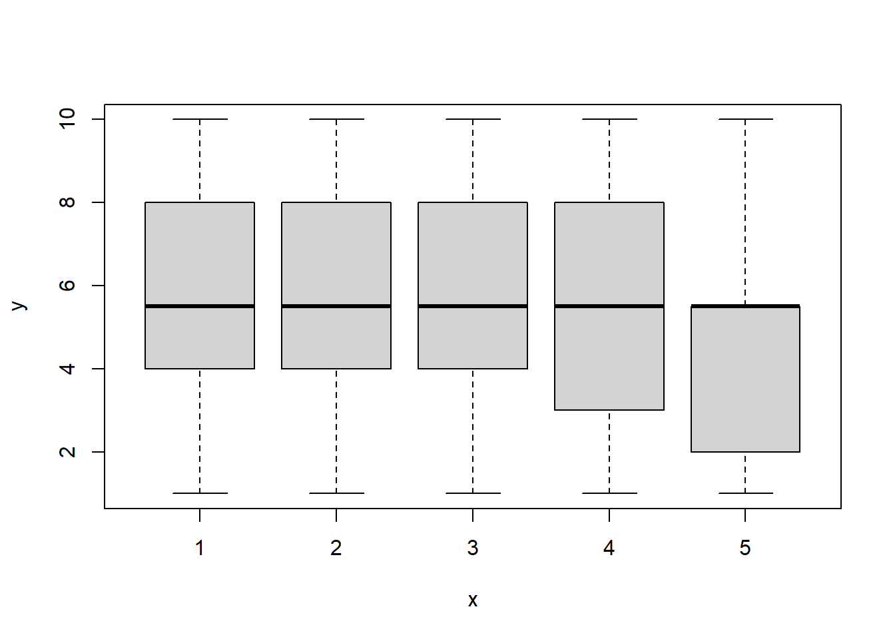
plot(TEDS_2016$Age_f, TEDS_2016$income, col="red")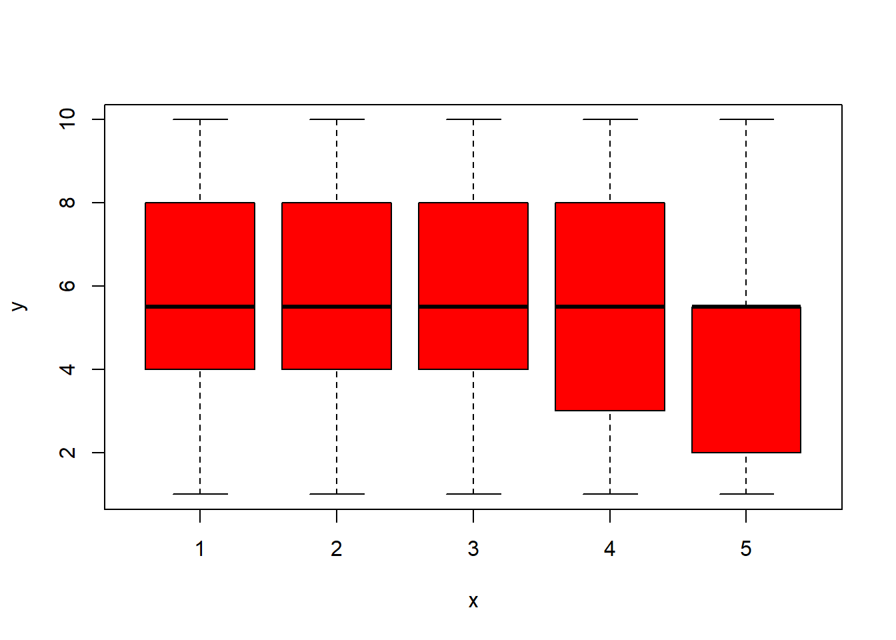
plot(TEDS_2016$Age_f, TEDS_2016$income, col="red", varwidth=TRUE)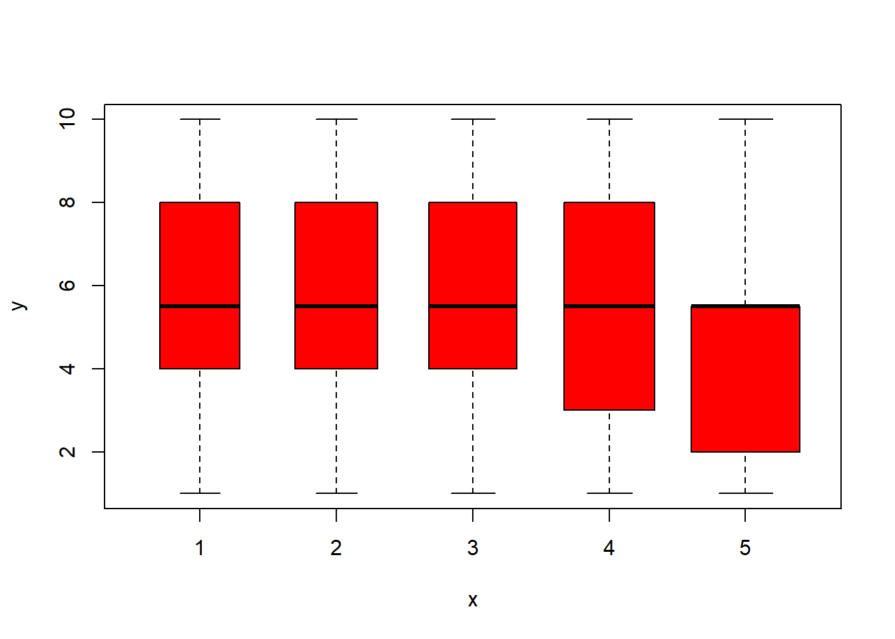
plot(TEDS_2016$Age_f, TEDS_2016$income, col="red", varwidth=TRUE, horizontal=TRUE)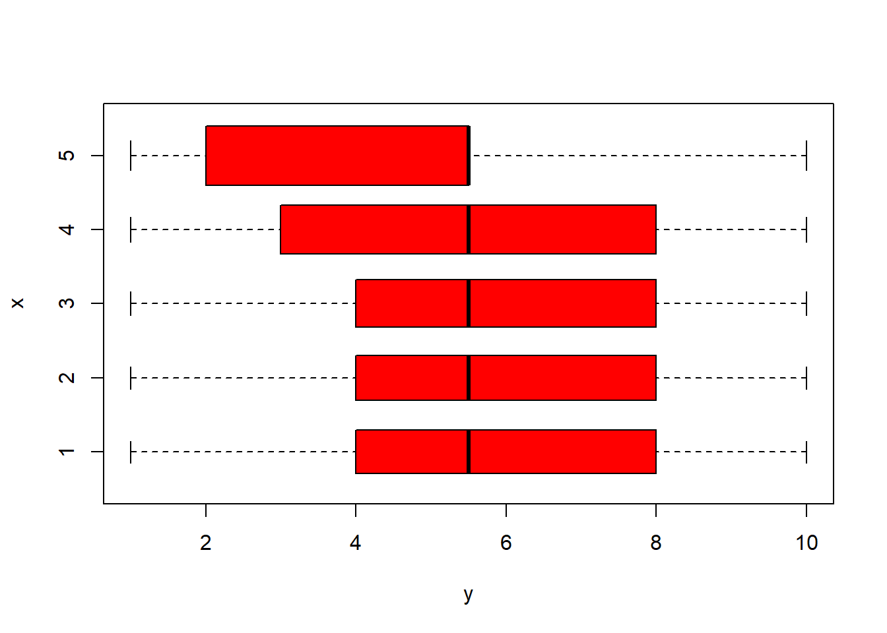
plot(TEDS_2016$Age_f, TEDS_2016$income, col="red", varwidth=TRUE,
xlab="Age group (1–5)", ylab="Income (1–10)")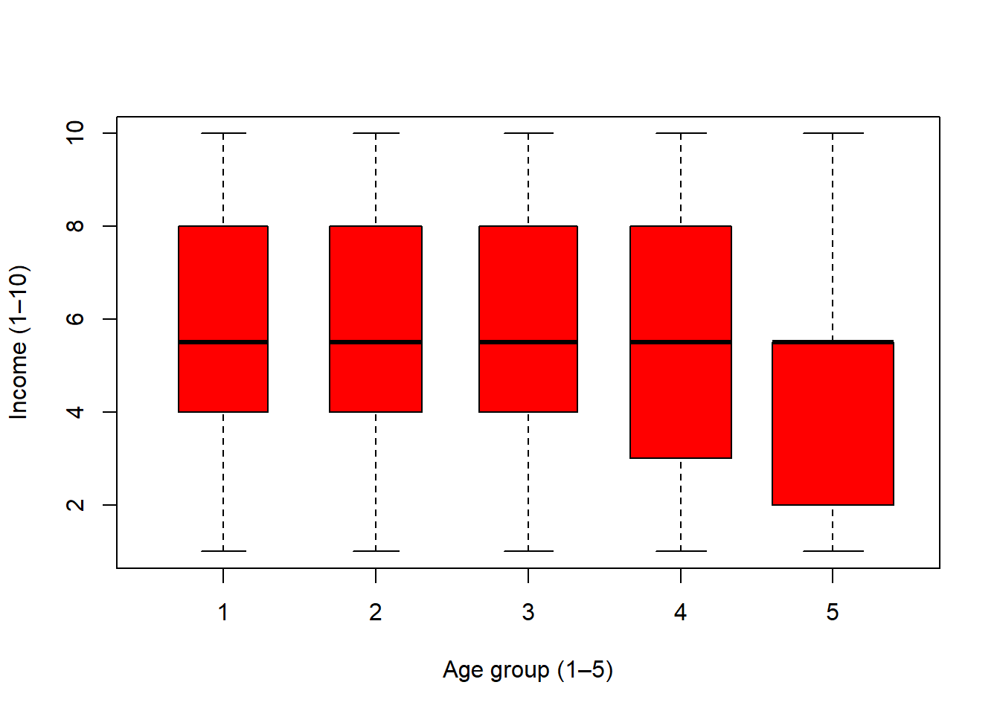
# 3) Histogram (like hist(mpg))
hist(TEDS_2016$income)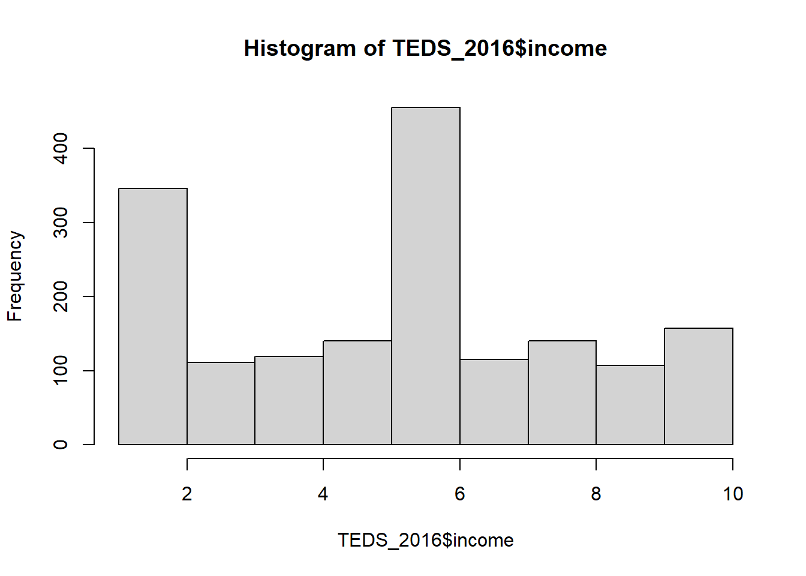
hist(TEDS_2016$income, col=2)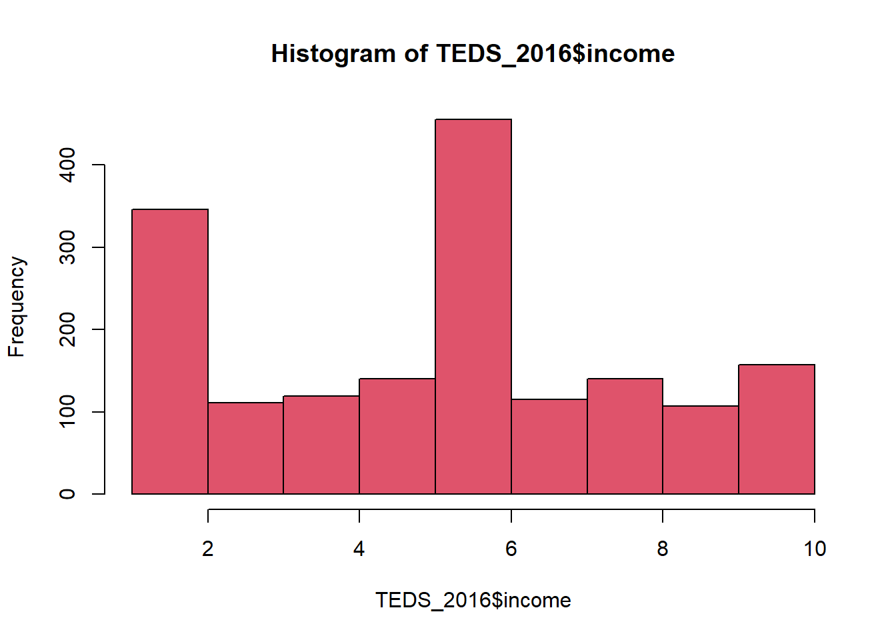
hist(TEDS_2016$income, col=2, breaks=15)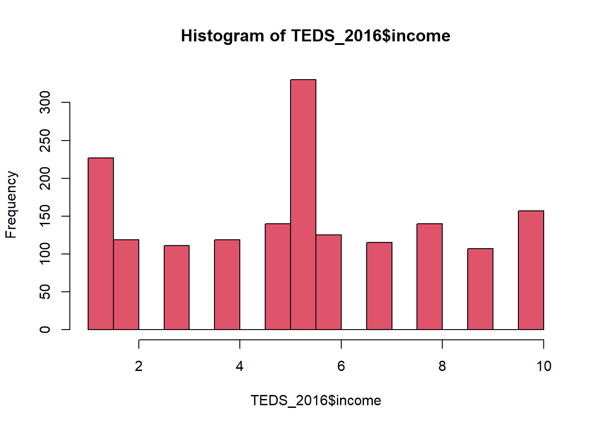
# 4) Pairs plot: pick numeric variables that exist in TEDS
pairs(~ income + age + inequality5 + econworse5 + pubwelf5, data=TEDS_2016)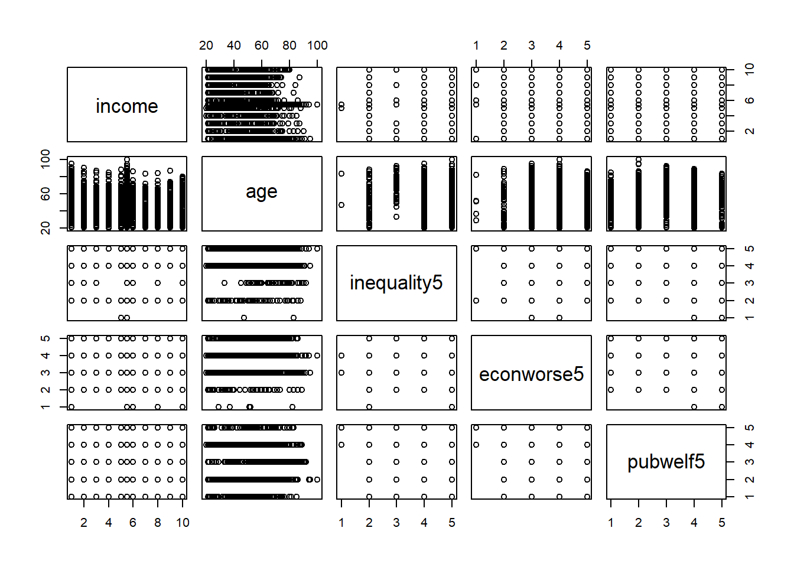
# 5) Another scatterplot (like plot(horsepower, mpg))
plot(TEDS_2016$age, TEDS_2016$income)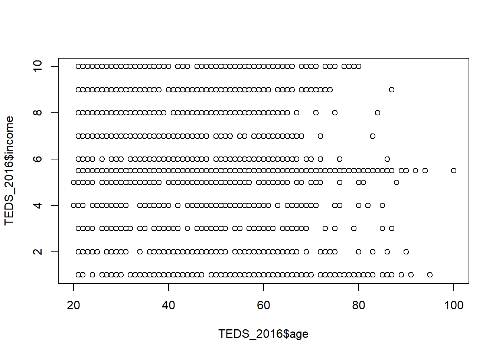
# 6) Summaries
summary(TEDS_2016) District Sex Age Edu Arear
Min. : 201 Min. :1.000 Min. :1.0 Min. :1.000 Min. :1.000
1st Qu.:1401 1st Qu.:1.000 1st Qu.:2.0 1st Qu.:2.000 1st Qu.:1.000
Median :6406 Median :1.000 Median :3.0 Median :3.000 Median :3.000
Mean :4661 Mean :1.486 Mean :3.3 Mean :3.334 Mean :2.744
3rd Qu.:6604 3rd Qu.:2.000 3rd Qu.:5.0 3rd Qu.:5.000 3rd Qu.:4.000
Max. :6806 Max. :2.000 Max. :5.0 Max. :9.000 Max. :6.000
Career Career8 Ethnic Party
Min. :1.000 Min. :1.000 Min. :1.000 Min. : 1.00
1st Qu.:1.000 1st Qu.:2.000 1st Qu.:1.000 1st Qu.: 5.00
Median :2.000 Median :4.000 Median :1.000 Median : 7.00
Mean :2.683 Mean :3.811 Mean :1.658 Mean :13.02
3rd Qu.:4.000 3rd Qu.:5.000 3rd Qu.:2.000 3rd Qu.:25.00
Max. :5.000 Max. :8.000 Max. :9.000 Max. :26.00
PartyID Tondu Tondu3 nI2
Min. :1.000 Min. :1.000 Min. :1.000 Min. : 1.00
1st Qu.:2.000 1st Qu.:3.000 1st Qu.:2.000 1st Qu.: 1.00
Median :2.000 Median :4.000 Median :2.000 Median : 3.00
Mean :4.522 Mean :4.127 Mean :2.667 Mean :35.13
3rd Qu.:9.000 3rd Qu.:5.000 3rd Qu.:3.000 3rd Qu.:98.00
Max. :9.000 Max. :9.000 Max. :9.000 Max. :98.00
votetsai green votetsai_nm votetsai_all
Min. :0.0000 Min. :0.0000 Min. :0.0000 Min. :0.0000
1st Qu.:0.0000 1st Qu.:0.0000 1st Qu.:0.0000 1st Qu.:0.0000
Median :1.0000 Median :0.0000 Median :1.0000 Median :1.0000
Mean :0.6265 Mean :0.3781 Mean :0.6265 Mean :0.5478
3rd Qu.:1.0000 3rd Qu.:1.0000 3rd Qu.:1.0000 3rd Qu.:1.0000
Max. :1.0000 Max. :1.0000 Max. :1.0000 Max. :1.0000
NA's :429 NA's :429 NA's :248
Independence Unification sq Taiwanese
Min. :0.0000 Min. :0.0000 Min. :0.0000 Min. :0.0000
1st Qu.:0.0000 1st Qu.:0.0000 1st Qu.:0.0000 1st Qu.:0.0000
Median :0.0000 Median :0.0000 Median :1.0000 Median :1.0000
Mean :0.2888 Mean :0.1225 Mean :0.5172 Mean :0.6272
3rd Qu.:1.0000 3rd Qu.:0.0000 3rd Qu.:1.0000 3rd Qu.:1.0000
Max. :1.0000 Max. :1.0000 Max. :1.0000 Max. :1.0000
edu female whitecollar lowincome
Min. :1.000 Min. :0.0000 Min. :0.0000 Min. :1.000
1st Qu.:2.000 1st Qu.:0.0000 1st Qu.:0.0000 1st Qu.:4.000
Median :3.000 Median :0.0000 Median :1.0000 Median :5.000
Mean :3.301 Mean :0.4864 Mean :0.5373 Mean :4.343
3rd Qu.:5.000 3rd Qu.:1.0000 3rd Qu.:1.0000 3rd Qu.:5.000
Max. :5.000 Max. :1.0000 Max. :1.0000 Max. :5.000
NA's :10
income income_nm age KMT
Min. : 1.000 Min. : 1.000 Min. : 20.00 Min. :0.0000
1st Qu.: 3.000 1st Qu.: 2.000 1st Qu.: 35.00 1st Qu.:0.0000
Median : 5.500 Median : 5.000 Median : 49.00 Median :0.0000
Mean : 5.324 Mean : 5.281 Mean : 49.11 Mean :0.2296
3rd Qu.: 7.000 3rd Qu.: 8.000 3rd Qu.: 61.00 3rd Qu.:0.0000
Max. :10.000 Max. :10.000 Max. :100.00 Max. :1.0000
NA's :330
DPP npp noparty pfp
Min. :0.0000 Min. :0.00000 Min. :0.0000 Min. :0.00000
1st Qu.:0.0000 1st Qu.:0.00000 1st Qu.:0.0000 1st Qu.:0.00000
Median :0.0000 Median :0.00000 Median :0.0000 Median :0.00000
Mean :0.3497 Mean :0.02544 Mean :0.3716 Mean :0.01893
3rd Qu.:1.0000 3rd Qu.:0.00000 3rd Qu.:1.0000 3rd Qu.:0.00000
Max. :1.0000 Max. :1.00000 Max. :1.0000 Max. :1.00000
South north Minnan_father Mainland_father
Min. :0.0000 Min. :0.0000 Min. :0.0000 Min. :0.0000
1st Qu.:0.0000 1st Qu.:0.0000 1st Qu.:0.0000 1st Qu.:0.0000
Median :0.0000 Median :0.0000 Median :1.0000 Median :0.0000
Mean :0.4947 Mean :0.4799 Mean :0.7225 Mean :0.1024
3rd Qu.:1.0000 3rd Qu.:1.0000 3rd Qu.:1.0000 3rd Qu.:0.0000
Max. :1.0000 Max. :1.0000 Max. :1.0000 Max. :1.0000
Econ_worse Inequality inequality5 econworse5
Min. :0.0000 Min. :0.0000 Min. :1.000 Min. :1.000
1st Qu.:0.0000 1st Qu.:1.0000 1st Qu.:4.000 1st Qu.:3.000
Median :1.0000 Median :1.0000 Median :5.000 Median :4.000
Mean :0.5544 Mean :0.9355 Mean :4.495 Mean :3.644
3rd Qu.:1.0000 3rd Qu.:1.0000 3rd Qu.:5.000 3rd Qu.:4.000
Max. :1.0000 Max. :1.0000 Max. :5.000 Max. :5.000
Govt_for_public pubwelf5 Govt_dont_care highincome
Min. :0.0000 Min. :1.000 Min. :0.0000 Min. :0.0000
1st Qu.:0.0000 1st Qu.:2.000 1st Qu.:0.0000 1st Qu.:0.0000
Median :0.0000 Median :3.000 Median :0.0000 Median :1.0000
Mean :0.4249 Mean :2.877 Mean :0.4988 Mean :0.5765
3rd Qu.:1.0000 3rd Qu.:4.000 3rd Qu.:1.0000 3rd Qu.:1.0000
Max. :1.0000 Max. :5.000 Max. :1.0000 Max. :1.0000
NA's :330
votekmt votekmt_nm Blue Green No_Party
Min. :0.0000 Min. :0.0000 Min. :0 Min. :0 Min. :0
1st Qu.:0.0000 1st Qu.:0.0000 1st Qu.:0 1st Qu.:0 1st Qu.:0
Median :0.0000 Median :0.0000 Median :0 Median :0 Median :0
Mean :0.2053 Mean :0.2752 Mean :0 Mean :0 Mean :0
3rd Qu.:0.0000 3rd Qu.:1.0000 3rd Qu.:0 3rd Qu.:0 3rd Qu.:0
Max. :1.0000 Max. :1.0000 Max. :0 Max. :0 Max. :0
NA's :429
voteblue voteblue_nm votedpp_1 votekmt_1 Age_f
Min. :0.0000 Min. :0.0000 Min. :0.0000 Min. :0.0000 1:264
1st Qu.:0.0000 1st Qu.:0.0000 1st Qu.:0.0000 1st Qu.:0.0000 2:282
Median :0.0000 Median :0.0000 Median :1.0000 Median :0.0000 3:317
Mean :0.2787 Mean :0.3735 Mean :0.5256 Mean :0.2309 4:337
3rd Qu.:1.0000 3rd Qu.:1.0000 3rd Qu.:1.0000 3rd Qu.:0.0000 5:490
Max. :1.0000 Max. :1.0000 Max. :1.0000 Max. :1.0000
NA's :429 NA's :187 NA's :187 summary(TEDS_2016$income) Min. 1st Qu. Median Mean 3rd Qu. Max.
1.000 3.000 5.500 5.324 7.000 10.000 names(TEDS_2016) [1] "District" "Sex" "Age" "Edu"
[5] "Arear" "Career" "Career8" "Ethnic"
[9] "Party" "PartyID" "Tondu" "Tondu3"
[13] "nI2" "votetsai" "green" "votetsai_nm"
[17] "votetsai_all" "Independence" "Unification" "sq"
[21] "Taiwanese" "edu" "female" "whitecollar"
[25] "lowincome" "income" "income_nm" "age"
[29] "KMT" "DPP" "npp" "noparty"
[33] "pfp" "South" "north" "Minnan_father"
[37] "Mainland_father" "Econ_worse" "Inequality" "inequality5"
[41] "econworse5" "Govt_for_public" "pubwelf5" "Govt_dont_care"
[45] "highincome" "votekmt" "votekmt_nm" "Blue"
[49] "Green" "No_Party" "voteblue" "voteblue_nm"
[53] "votedpp_1" "votekmt_1" "Age_f" # Fit the model (no attach needed)
lm.fit <- lm(income ~ age, data = TEDS_2016)
lm.fit
Call:
lm(formula = income ~ age, data = TEDS_2016)
Coefficients:
(Intercept) age
6.97331 -0.03359 summary(lm.fit)
Call:
lm(formula = income ~ age, data = TEDS_2016)
Residuals:
Min 1Q Median 3Q Max
-5.2680 -2.1596 0.1427 1.8068 5.7137
Coefficients:
Estimate Std. Error t value Pr(>|t|)
(Intercept) 6.973309 0.201284 34.644 <2e-16 ***
age -0.033587 0.003877 -8.662 <2e-16 ***
---
Signif. codes: 0 '***' 0.001 '**' 0.01 '*' 0.05 '.' 0.1 ' ' 1
Residual standard error: 2.679 on 1688 degrees of freedom
Multiple R-squared: 0.04256, Adjusted R-squared: 0.04199
F-statistic: 75.03 on 1 and 1688 DF, p-value: < 2.2e-16names(lm.fit) [1] "coefficients" "residuals" "effects" "rank"
[5] "fitted.values" "assign" "qr" "df.residual"
[9] "xlevels" "call" "terms" "model" coef(lm.fit)(Intercept) age
6.97330884 -0.03358744 confint(lm.fit) 2.5 % 97.5 %
(Intercept) 6.57851695 7.36810073
age -0.04119265 -0.02598223predict(lm.fit, data.frame(age = c(25, 40, 60)), interval = "confidence") fit lwr upr
1 6.133623 5.910078 6.357167
2 5.629811 5.484406 5.775216
3 4.958062 4.805778 5.110347predict(lm.fit, data.frame(age = c(25, 40, 60)), interval = "prediction") fit lwr upr
1 6.133623 0.8743390 11.39291
2 5.629811 0.3732689 10.88635
3 4.958062 -0.2986747 10.21480plot(TEDS_2016$age, TEDS_2016$income)
abline(lm.fit)
abline(lm.fit, lwd=3)
abline(lm.fit, lwd=3, col="red")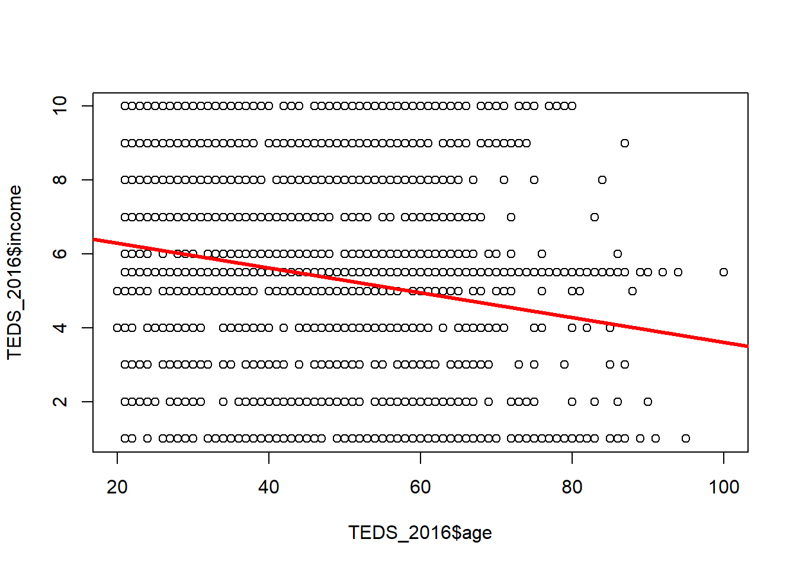
plot(TEDS_2016$age, TEDS_2016$income, col="red")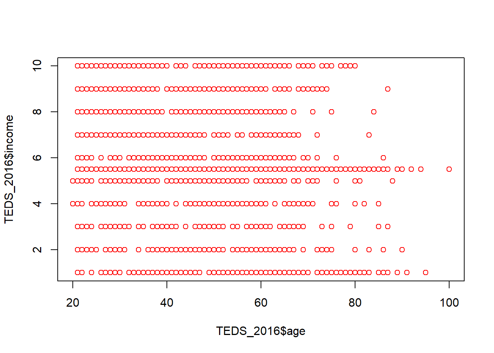
plot(TEDS_2016$age, TEDS_2016$income, pch=16)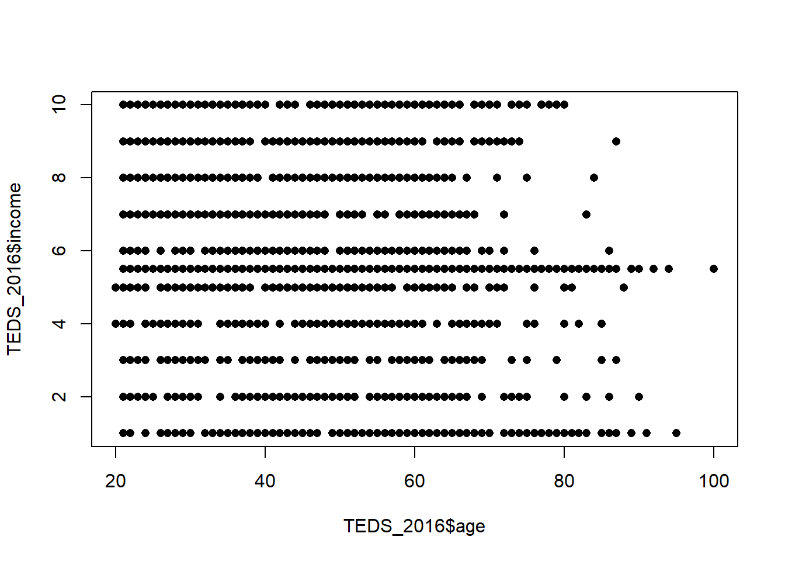
plot(TEDS_2016$age, TEDS_2016$income, pch="+")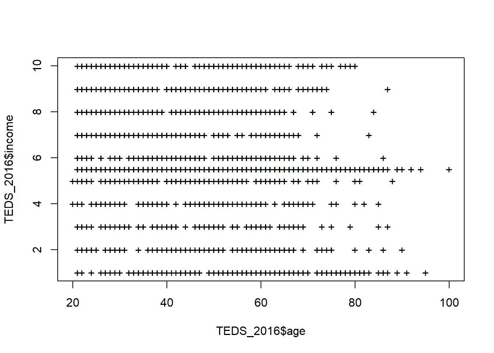
par(mfrow=c(2,2))
plot(lm.fit)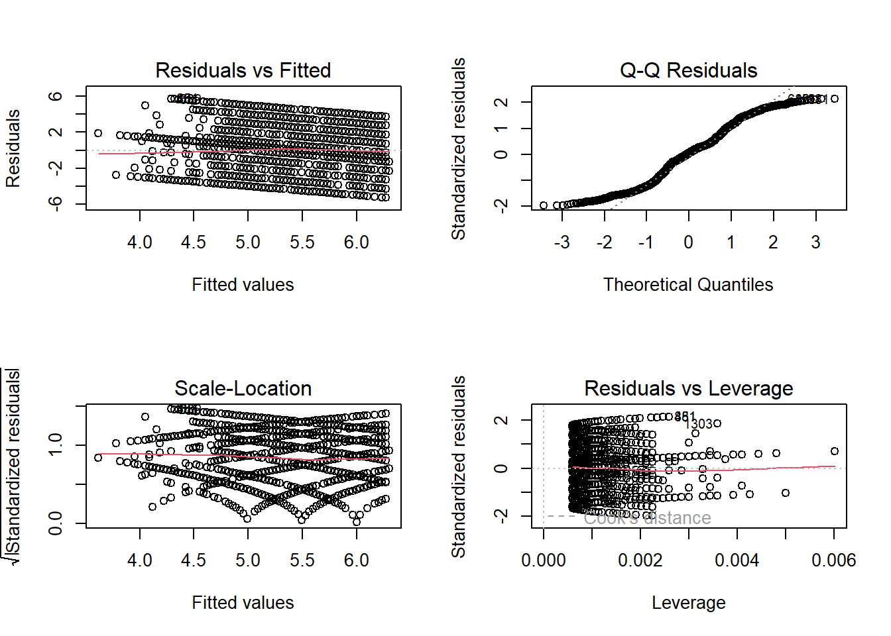
plot(predict(lm.fit), residuals(lm.fit))
plot(predict(lm.fit), rstudent(lm.fit))
plot(hatvalues(lm.fit))
which.max(hatvalues(lm.fit))216
216 lm.edu <- lm(income ~ as.factor(Edu), data = TEDS_2016)
summary(lm.edu)
Call:
lm(formula = income ~ as.factor(Edu), data = TEDS_2016)
Residuals:
Min 1Q Median 3Q Max
-5.4511 -2.0435 0.1325 1.5489 5.9565
Coefficients:
Estimate Std. Error t value Pr(>|t|)
(Intercept) 4.0435 0.1430 28.280 < 2e-16 ***
as.factor(Edu)2 0.3789 0.2477 1.530 0.126
as.factor(Edu)3 0.8240 0.1874 4.398 1.16e-05 ***
as.factor(Edu)4 2.0049 0.2363 8.485 < 2e-16 ***
as.factor(Edu)5 2.4076 0.1793 13.426 < 2e-16 ***
as.factor(Edu)9 0.6565 0.8239 0.797 0.426
---
Signif. codes: 0 '***' 0.001 '**' 0.01 '*' 0.05 '.' 0.1 ' ' 1
Residual standard error: 2.566 on 1684 degrees of freedom
Multiple R-squared: 0.1239, Adjusted R-squared: 0.1213
F-statistic: 47.63 on 5 and 1684 DF, p-value: < 2.2e-16plot(as.factor(TEDS_2016$Edu), TEDS_2016$income, col="red", varwidth=TRUE)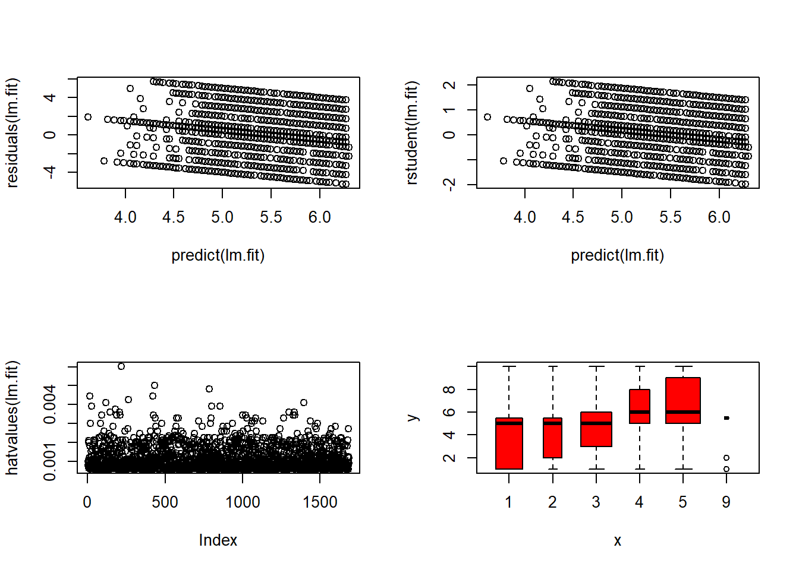
install.packages("car")Warning: package 'car' is in use and will not be installedlibrary(car)
# (Assumes TEDS_2016 is already loaded)
# Optional: remove rows with missing values for variables used
TEDS_lm <- subset(TEDS_2016,
!is.na(income) & !is.na(age) & !is.na(edu) &
!is.na(female) & !is.na(whitecollar))
# 1) Multiple regression like: medv ~ lstat + age
lm.fit <- lm(income ~ age + edu, data = TEDS_lm)
summary(lm.fit)
Call:
lm(formula = income ~ age + edu, data = TEDS_lm)
Residuals:
Min 1Q Median 3Q Max
-5.4722 -2.1345 0.1528 1.6347 6.1448
Coefficients:
Estimate Std. Error t value Pr(>|t|)
(Intercept) 3.077706 0.376811 8.168 6.11e-16 ***
age 0.002125 0.004769 0.445 0.656
edu 0.649999 0.053811 12.079 < 2e-16 ***
---
Signif. codes: 0 '***' 0.001 '**' 0.01 '*' 0.05 '.' 0.1 ' ' 1
Residual standard error: 2.575 on 1677 degrees of freedom
Multiple R-squared: 0.1193, Adjusted R-squared: 0.1183
F-statistic: 113.6 on 2 and 1677 DF, p-value: < 2.2e-16# 2) "All predictors" version (safe approach: choose a set of numeric predictors)
lm.fit_all <- lm(income ~ age + edu + female + whitecollar + inequality5 + econworse5 + pubwelf5,
data = TEDS_lm)
summary(lm.fit_all)
Call:
lm(formula = income ~ age + edu + female + whitecollar + inequality5 +
econworse5 + pubwelf5, data = TEDS_lm)
Residuals:
Min 1Q Median 3Q Max
-5.7429 -2.0731 0.0982 1.7548 6.6150
Coefficients:
Estimate Std. Error t value Pr(>|t|)
(Intercept) 3.3530388 0.6345931 5.284 1.43e-07 ***
age -0.0004934 0.0047755 -0.103 0.91772
edu 0.4773002 0.0618942 7.712 2.12e-14 ***
female -0.1360900 0.1265180 -1.076 0.28224
whitecollar 0.7143387 0.1494450 4.780 1.91e-06 ***
inequality5 -0.0175512 0.0883940 -0.199 0.84263
econworse5 -0.0657466 0.0852948 -0.771 0.44093
pubwelf5 0.1467219 0.0566765 2.589 0.00972 **
---
Signif. codes: 0 '***' 0.001 '**' 0.01 '*' 0.05 '.' 0.1 ' ' 1
Residual standard error: 2.552 on 1672 degrees of freedom
Multiple R-squared: 0.1375, Adjusted R-squared: 0.1339
F-statistic: 38.08 on 7 and 1672 DF, p-value: < 2.2e-16# VIF for multicollinearity (works on lm objects)
vif(lm.fit_all) age edu female whitecollar inequality5 econworse5
1.663786 2.195045 1.031693 1.431585 1.067853 1.125201
pubwelf5
1.134655 # 3) Remove one variable (like ~ . - age)
lm.fit1 <- update(lm.fit_all, ~ . - age)
summary(lm.fit1)
Call:
lm(formula = income ~ edu + female + whitecollar + inequality5 +
econworse5 + pubwelf5, data = TEDS_lm)
Residuals:
Min 1Q Median 3Q Max
-5.7373 -2.0670 0.0868 1.7487 6.6077
Coefficients:
Estimate Std. Error t value Pr(>|t|)
(Intercept) 3.32021 0.54915 6.046 1.83e-09 ***
edu 0.48105 0.05016 9.591 < 2e-16 ***
female -0.13567 0.12641 -1.073 0.28334
whitecollar 0.71297 0.14881 4.791 1.81e-06 ***
inequality5 -0.01735 0.08835 -0.196 0.84431
econworse5 -0.06658 0.08489 -0.784 0.43298
pubwelf5 0.14635 0.05654 2.588 0.00973 **
---
Signif. codes: 0 '***' 0.001 '**' 0.01 '*' 0.05 '.' 0.1 ' ' 1
Residual standard error: 2.551 on 1673 degrees of freedom
Multiple R-squared: 0.1375, Adjusted R-squared: 0.1344
F-statistic: 44.45 on 6 and 1673 DF, p-value: < 2.2e-16# same thing, just showing the update call directly (like your last line)
lm.fit1b <- update(lm.fit_all, ~ . - age)# Assumes TEDS_2016 is already loaded
# Keep only complete cases for variables we use
TEDS_poly <- subset(TEDS_2016, !is.na(income) & !is.na(age) & age > 0)
# Quadratic model: income ~ age + age^2
lm.fit2 <- lm(income ~ age + I(age^2), data = TEDS_poly)
summary(lm.fit2)
Call:
lm(formula = income ~ age + I(age^2), data = TEDS_poly)
Residuals:
Min 1Q Median 3Q Max
-5.0805 -2.1022 0.0833 1.9390 5.8965
Coefficients:
Estimate Std. Error t value Pr(>|t|)
(Intercept) 6.2530458 0.5137085 12.172 <2e-16 ***
age -0.0015759 0.0213619 -0.074 0.941
I(age^2) -0.0003162 0.0002075 -1.524 0.128
---
Signif. codes: 0 '***' 0.001 '**' 0.01 '*' 0.05 '.' 0.1 ' ' 1
Residual standard error: 2.678 on 1687 degrees of freedom
Multiple R-squared: 0.04387, Adjusted R-squared: 0.04274
F-statistic: 38.71 on 2 and 1687 DF, p-value: < 2.2e-16# Linear model: income ~ age
lm.fit <- lm(income ~ age, data = TEDS_poly)
# Compare linear vs quadratic (nested models)
anova(lm.fit, lm.fit2)Analysis of Variance Table
Model 1: income ~ age
Model 2: income ~ age + I(age^2)
Res.Df RSS Df Sum of Sq F Pr(>F)
1 1688 12115
2 1687 12098 1 16.653 2.3221 0.1277# Diagnostic plots for quadratic model
par(mfrow = c(2,2))
plot(lm.fit2)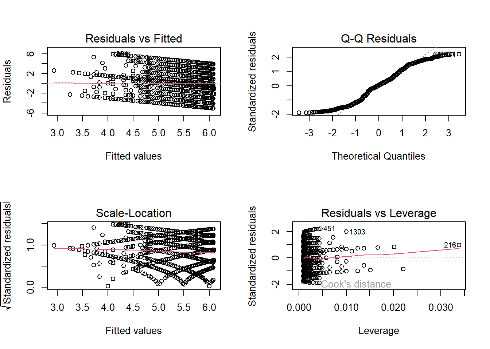
# 5th-degree polynomial model
lm.fit5 <- lm(income ~ poly(age, 5), data = TEDS_poly)
summary(lm.fit5)
Call:
lm(formula = income ~ poly(age, 5), data = TEDS_poly)
Residuals:
Min 1Q Median 3Q Max
-5.0082 -2.1101 0.0696 1.9206 6.0061
Coefficients:
Estimate Std. Error t value Pr(>|t|)
(Intercept) 5.32367 0.06516 81.698 <2e-16 ***
poly(age, 5)1 -23.20597 2.67880 -8.663 <2e-16 ***
poly(age, 5)2 -4.08076 2.67880 -1.523 0.128
poly(age, 5)3 2.67482 2.67880 0.999 0.318
poly(age, 5)4 1.65380 2.67880 0.617 0.537
poly(age, 5)5 2.01326 2.67880 0.752 0.452
---
Signif. codes: 0 '***' 0.001 '**' 0.01 '*' 0.05 '.' 0.1 ' ' 1
Residual standard error: 2.679 on 1684 degrees of freedom
Multiple R-squared: 0.04498, Adjusted R-squared: 0.04214
F-statistic: 15.86 on 5 and 1684 DF, p-value: 2.709e-15# Log-transform example (like log(rm) in Boston)
# Here: income ~ log(age)
summary(lm(income ~ log(age), data = TEDS_poly))
Call:
lm(formula = income ~ log(age), data = TEDS_poly)
Residuals:
Min 1Q Median 3Q Max
-5.4546 -2.2035 0.2057 1.7965 5.4716
Coefficients:
Estimate Std. Error t value Pr(>|t|)
(Intercept) 10.8391 0.6791 15.96 < 2e-16 ***
log(age) -1.4401 0.1765 -8.16 6.49e-16 ***
---
Signif. codes: 0 '***' 0.001 '**' 0.01 '*' 0.05 '.' 0.1 ' ' 1
Residual standard error: 2.685 on 1688 degrees of freedom
Multiple R-squared: 0.03795, Adjusted R-squared: 0.03738
F-statistic: 66.58 on 1 and 1688 DF, p-value: 6.486e-16# Make sure dataset is loaded
# library(haven)
# TEDS_2016 <- read_dta("...")
# Remove missing values for variables used
TEDS_int <- subset(TEDS_2016,
!is.na(income) & !is.na(age) &
!is.na(edu) & !is.na(inequality5) &
!is.na(econworse5))
# Convert Edu to factor (like ShelveLoc)
TEDS_int$Edu_f <- as.factor(TEDS_int$Edu)
# Full model with interactions
lm.fit <- lm(income ~ age + edu + inequality5 + econworse5 +
age:inequality5 + edu:econworse5,
data = TEDS_int)
summary(lm.fit)
Call:
lm(formula = income ~ age + edu + inequality5 + econworse5 +
age:inequality5 + edu:econworse5, data = TEDS_int)
Residuals:
Min 1Q Median 3Q Max
-5.6087 -2.1391 0.0931 1.7489 6.3191
Coefficients:
Estimate Std. Error t value Pr(>|t|)
(Intercept) 0.976064 1.538607 0.634 0.525919
age 0.047037 0.022437 2.096 0.036200 *
edu 0.768491 0.213360 3.602 0.000325 ***
inequality5 0.474062 0.268390 1.766 0.077525 .
econworse5 -0.006731 0.201756 -0.033 0.973388
age:inequality5 -0.009996 0.004949 -2.020 0.043580 *
edu:econworse5 -0.033004 0.055953 -0.590 0.555373
---
Signif. codes: 0 '***' 0.001 '**' 0.01 '*' 0.05 '.' 0.1 ' ' 1
Residual standard error: 2.573 on 1673 degrees of freedom
Multiple R-squared: 0.1229, Adjusted R-squared: 0.1198
F-statistic: 39.07 on 6 and 1673 DF, p-value: < 2.2e-16# Remove missing values for variables used
TEDS_int <- subset(TEDS_2016,
!is.na(income) &
!is.na(age) &
!is.na(inequality5))
summary(lm(income ~ age * inequality5, data = TEDS_int))
Call:
lm(formula = income ~ age * inequality5, data = TEDS_int)
Residuals:
Min 1Q Median 3Q Max
-5.4089 -2.1819 0.1467 1.7899 5.9328
Coefficients:
Estimate Std. Error t value Pr(>|t|)
(Intercept) 4.930127 1.236825 3.986 7e-05 ***
age 0.013582 0.022670 0.599 0.5492
inequality5 0.462457 0.275073 1.681 0.0929 .
age:inequality5 -0.010654 0.005046 -2.112 0.0349 *
---
Signif. codes: 0 '***' 0.001 '**' 0.01 '*' 0.05 '.' 0.1 ' ' 1
Residual standard error: 2.676 on 1686 degrees of freedom
Multiple R-squared: 0.04562, Adjusted R-squared: 0.04392
F-statistic: 26.86 on 3 and 1686 DF, p-value: < 2.2e-16